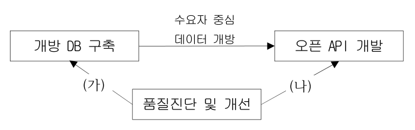

작성 기준: 업로드된 「1-1 정보화법_제도_감리」, 「1-2 사업관리」 강의자료 우선 근거, 외부지식은 보조적으로만 사용(강의자료 미수록 지침은 각 문항에 명시)
정답 출처: 2019년(제20회) 정보시스템 감리사 필기시험 문제 및 답안.pdf (원본 Bold 표시 정답 - 페이지 렌더 이미지 직접 대조 확인)
정답 신뢰도: 매우 높음 (PDF 렌더 이미지 확대 대조로 Bold 표시 검증 완료, 자동 추출 결과와 교차검증 25/25 확정)
특이사항: 복수정답·전항정답 처리 문항 없음(전 문항 단일정답)
법령 기준 주의: 본 회차는 2019년 시행분으로 출제 당시 법령·지침 기준으로 정답이 확정되어 있다. 각 문항의 「관련 이론 정리」 말미에 현행(2025년 기준) 개정사항을 별도 표기하였으므로, 현행 시험 대비 시 반드시 개정 내용을 함께 확인해야 한다.
| 번호 | 정답 | 번호 | 정답 | 번호 | 정답 |
|---|---|---|---|---|---|
| 1 | ④ | 10 | ④ | 19 | ① |
| 2 | ④ | 11 | ② | 20 | ④ |
| 3 | ① | 12 | ③ | 21 | ② |
| 4 | ③ | 13 | ③ | 22 | ④ |
| 5 | ④ | 14 | ④ | 23 | ③ |
| 6 | ① | 15 | ② | 24 | ④ |
| 7 | ③ | 16 | ① | 25 | ④ |
| 8 | ④ | 17 | ② | ||
| 9 | ② | 18 | ④ |
2019년 제20회는 앞뒤 회차와 문항 배열이 뒤바뀐 것이 가장 큰 특징이다. 2020년·2021년이 「법·지침 12문항(앞) → 사업관리 13문항(뒤)」 순서였던 데 반해, 2019년은 사업관리 13문항(1~13번)이 앞, 법·지침 12문항(14~25번)이 뒤에 배치되었다.
사업관리 영역(1~13번) 은 계산 문항 비중이 높았다. RRL(1번), ETC(3번), PERT 3점 산정(8번) 세 문항이 계산형이고, 진도율 평가 원칙(6번)까지 포함하면 수치 판단 문항이 4개다. 나머지는 터크맨 팀 발달(2번), 의존관계·리드/래그(4번), 간트차트 한계(5번), 애자일 선언(7번), 파레토 차트(9번), ISO 21500 리스크 통제(10번), 리스크 촉발목록(11번), 조직구조 6대 핵심요소(12번), 원가기준선(13번)으로 PMBOK 기본 개념을 폭넓게 물었다. 10·11번은 PMBOK이 아닌 KS A ISO 21500과 PMBOK 6판 이후의 촉발목록(prompt list)·PESTLE/TECOP/VUCA 프레임워크를 근거로 해 체감 난도가 높았다.
법·지침 영역(14~25번) 은 조문의 정확한 수치·명칭을 묻는 문항이 압도적이었다. 감리 생략 사업(14번), 1차 행정처분 기준(15번), 종료단계 감리 절차 빈칸(16번), 점검프레임워크 사업유형 개수(17번), 과업이행 점검방법(18번), 3단계/2단계 감리·감리인력 배치 비율 빈칸(19번)까지 여섯 문항이 연달아 감리기준·시행령의 세부 수치를 요구했다. 이어 정보화사업 원가 산정(20번), FP 보정요소(21번), 사전협의 검토사항 개수(22번), 공공데이터 개방 방법론(23번), FP 단위기능 산정 오류(24번), 공공데이터 품질 오류율(25번)로 가이드·매뉴얼 계열이 배치되었다.
주의할 개정 포인트: 15번의 행정처분 기준(시행령 별표)과 19번의 감리단계·인력배치 비율은 이후 개정 이력이 있고, 21·24번의 「SW사업 대가산정 가이드」는 매년 개정되며, 23·25번의 공공데이터 방법론·품질관리 매뉴얼은 버전이 올라갔다. 각 문항의 「관련 이론 정리」에서 현행 내용을 확인할 것.
| 항목 | 내용 |
|---|---|
| 문서명 | 정보시스템 감리사 감리 및 사업관리 기출문제 해설집 - 2019년 제20회 |
| 대상 문항 | Q1 ~ Q25 (감리 및 사업관리) |
| 원본 출처 | 2019년(제20회) 정보시스템 감리사 필기시험 문제 및 답안.pdf |
| 정답 확인 방법 | PDF 페이지 렌더 이미지 대조(굵은 글씨 표시 확인), 자동 추출 결과와 교차검증 |
| 특이 문항 | 없음(전 문항 단일정답) |
| 문항 배열 | 사업관리 1~13번 · 법/지침 14~25번(2020·2021년과 순서 반대) |
| 그림 포함 문항 | 문항 23 — 공공데이터 개방 수행과제 연관관계도(assets/2019/q23.png) + 서술 전사 병기 |
| 근거 강의자료 | 1-1 정보화법_제도_감리(M01~M06), 1-2 사업관리(M07~M12) |
| 강의자료 미수록(외부지식 보완) 항목 | 리스크 촉발목록·PESTLE/TECOP/VUCA(11번), 조직구조 6대 핵심요소(12번), SW사업 대가산정 가이드 보정요소·단위기능 오류(21·24번), 공공데이터 개방 방법론·품질관리 매뉴얼(23·25번) |
| 법령 기준 | 2019년 출제 당시 기준 + 현행(2025년) 개정사항 병기 |
다음 네 가지 리스크 중에서 리스크 대응 효율성 평가를 위한 리스크 감소 레버리지(RRL : Risk Reduction Leverage)가 가장 큰 것은?
(제시 표)
| 리스크 목록 | 리스크 노출도(조치 전) | 리스크 노출도(조치 후) | 리스크 감소 비용 |
|---|---|---|---|
| A | 200 | 100 | 200 |
| B | 200 | 50 | 200 |
| C | 200 | 100 | 100 |
| D | 200 | 50 | 100 |
① A
② B
③ C
④ D
정답 : ④번
정답 신뢰도 : 매우 높음 (원본 이미지 Bold 확인)
| 항목 | 내용 |
|---|---|
| 연도 | 2019년 (제20회) |
| 과목 | 감리 및 사업관리 |
| 문항번호 | 1번 |
| 난이도 | 중 |
| 출제주제 | 위험관리 - 리스크 감소 레버리지(RRL) 계산 |
| 연도 | 문항번호 | 핵심개념 |
|---|---|---|
| 2019년 | 1번 | RRL 최대값 판별(본 문항) |
| (강의자료 수록 기출) | — | RRL 1 기준 비용-효과성 해석 |
★★★ 보통 출제
RRL은 리스크 대응 조치가 투입 비용 대비 얼마나 리스크를 줄였는가를 나타내는 효율성 지표로, 산식은 다음과 같다.
RRL = (조치 전 리스크 노출도 − 조치 후 리스크 노출도) ÷ 리스크 감소 비용
각 리스크에 대입하면 다음과 같다.
| 리스크 | 노출도 감소분 | 감소 비용 | RRL |
|---|---|---|---|
| A | 200 − 100 = 100 | 200 | 100 ÷ 200 = 0.5 |
| B | 200 − 50 = 150 | 200 | 150 ÷ 200 = 0.75 |
| C | 200 − 100 = 100 | 100 | 100 ÷ 100 = 1.0 |
| D | 200 − 50 = 150 | 100 | 150 ÷ 100 = 1.5 ← 최대 |
D가 가장 적은 비용(100)으로 가장 큰 노출도 감소(150)를 달성해 RRL이 1.5로 가장 크다. 따라서 정답은 ④번이다.
D는 RRL이 1보다 크므로 비용-효과적(cost-effective) 인 대응이며, A·B는 1보다 작아 들인 비용만큼의 리스크 감소를 얻지 못한 비용-비효과적 대응이다.
노출도 감소 100에 비용 200을 써 RRL = 0.5로 가장 낮다. 비용-비효과적이다.
노출도 감소는 150으로 D와 같지만 비용이 200으로 두 배여서 RRL = 0.75에 그친다. 감소분만 보고 고르면 틀리는 함정 보기다.
비용은 100으로 D와 같지만 노출도 감소가 100에 불과해 RRL = 1.0이다. 비용만 보고 고르면 틀리는 함정 보기다.
RRL 개념 정리:
| 항목 | 내용 |
|---|---|
| 산식 | RRL = (RE_before − RE_after) ÷ 리스크 감소 비용 |
| RE(리스크 노출도) | 발생확률 × 손실규모(금액) |
| RRL > 1 | 비용-효과적 — 줄인 리스크 금액이 들인 비용보다 큼 |
| RRL = 1 | 손익분기 |
| RRL < 1 | 비용-비효과적 — 들인 비용이 줄인 리스크보다 큼 |
강의자료 연계(M11 인적자원·위험관리, 원본 p.149): 강의자료는 RRL을 직접 다루며, 기출문제로 다음을 수록하고 있다.
Q. RRL이 화폐단위를 이용하여 계산되었을 경우 적절한 설명은? (2개 선택)
정답 ② RRL이 1보다 크면 비용-효과적이다. / ③ RRL이 1보다 적으면 비용-비효과적이다.
즉 본 문항의 계산 능력과 강의자료의 판정 기준(1을 기준으로 효과/비효과) 이 세트로 출제되는 구조다.
정량적 위험분석 기법(함께 알아둘 것):
| 기법 | 내용 |
|---|---|
| 민감도 분석 | 모든 불확실 요소를 기준값으로 놓고 각 요소의 불확실성이 목표에 미칠 영향 평가(토네이도 다이어그램) |
| 의사결정트리 분석 | 대안별 기대화폐가치(EMV) 비교 |
| EMV(기대화폐가치) | 확률 × 결과값의 합 |
| 몬테카를로 시뮬레이션 | 확률분포 기반 반복 시뮬레이션 |
프로젝트 리스크 대응계획을 승인받을 때, PM은 각 대응조치의 예상 비용과 리스크 노출도 감소분을 함께 제시해 RRL이 1을 넘는 조치부터 우선 승인받는다. 예컨대 "이중화 장비 도입(비용 1억, 장애 손실 기대값 2억 감소)"은 RRL = 2로 즉시 승인 대상이지만, "전 인력 교육(비용 5천만, 손실 기대값 2천만 감소)"은 RRL = 0.4로 재검토 대상이 된다. 감리원은 위험관리계획서에서 대응조치의 비용-효과 분석 근거가 문서화되어 있는지를 점검한다.
RRL 문항은 표 4행을 주고 최대·최소를 고르게 하는 형태로 고정 출제된다. 함정은 항상 동일하다 — 감소분만 큰 것(B) 과 비용만 적은 것(C) 을 나란히 배치해 놓는다. 반드시 나누기까지 끝내야 정답이 나온다. 계산 자체는 쉬우므로 산식(분자 = 노출도 감소, 분모 = 비용)만 정확히 외우면 확보 가능한 문항이다.
팀 구축에 관한 터크맨(Tuckman)의 사다리 모형에서 일반적인 팀 개발의 발생 순서에 따른 일부 단계들의 차례를 올바르게 나열한 것은?
① 규범화(norming) → 폭풍(storming) → 수행(performing)
② 수행(performing) → 폭풍(storming) → 규범화(norming)
③ 폭풍(storming) → 수행(performing) → 규범화(norming)
④ 폭풍(storming) → 규범화(norming) → 수행(performing)
정답 : ④번
정답 신뢰도 : 매우 높음 (원본 이미지 Bold 확인)
| 항목 | 내용 |
|---|---|
| 연도 | 2019년 (제20회) |
| 과목 | 감리 및 사업관리 |
| 문항번호 | 2번 |
| 난이도 | 하 |
| 출제주제 | 인적자원관리 - 터크맨(Tuckman) 팀 발달 5단계 |
| 연도 | 문항번호 | 핵심개념 |
|---|---|---|
| 2019년 | 2번 | 팀 발달 단계 순서(본 문항) |
| (강의자료 수록 기출) | — | 단계별 특징 판별 |
★★★★ 자주 출제
터크맨의 팀 발달 모형은 팀이 결성부터 해체까지 거치는 5단계를 제시한다.
문항은 이 중 2~4단계에 해당하는 세 단계의 순서를 묻고 있으므로 폭풍(Storming) → 규범화(Norming) → 수행(Performing) 이 정답이며 ④번이다.
이 순서는 "갈등을 겪어야(격동) 규칙이 만들어지고(규범), 규칙이 있어야 성과가 난다(수행)" 는 인과 흐름으로 이해하면 뒤집힐 여지가 없다.
규범화가 폭풍보다 앞에 왔다. 갈등을 거치지 않고 규범이 먼저 정립된다는 것은 모형의 취지와 배치된다.
수행이 맨 앞에 왔다. 팀이 형성되자마자 최고 성과를 낸다는 것은 불가능하며, 순서가 완전히 뒤집힌 보기다.
수행과 규범화의 순서가 뒤바뀌었다. 폭풍을 첫 단계로 맞게 배치해 놓아 언뜻 그럴듯해 보이는 최다 오답 보기다. 규범 정립 없이 고성과 단계로 갈 수는 없다.
터크맨 팀 발달 5단계:
| 단계 | 영문 | 특징 |
|---|---|---|
| 형성 | Forming | 팀 구성, 서로 탐색·리더 의존적, 표면적 예의 |
| 격동(폭풍) | Storming | 의견 충돌·갈등 발생, 갈등 최고조 |
| 규범 | Norming | 규칙·역할 정립, 협력 시작, 신뢰 형성 |
| 수행 | Performing | 높은 성과, 자율적 문제해결 |
| 해산 | Adjourning | 프로젝트 종료, 팀 해체, 교훈 정리 |
단계별 PM의 대응:
| 단계 | PM의 역할 |
|---|---|
| 형성 | 목표·역할 명확화, 방향 제시(지시적) |
| 격동 | 갈등 중재·조정, 규칙 논의 촉진 |
| 규범 | 합의된 규칙 정착 지원, 참여 유도 |
| 수행 | 위임, 장애 제거(서번트 리더십) |
| 해산 | 성과 인정, 교훈(Lessons Learned) 정리 |
강의자료 연계(M11 인적자원·위험관리 「4. 터크만(Tuckman) 팀 발달 5단계 ★★」): 강의자료는 5단계를 표로 정리하고 「💡 Tip · 순서 암기 — "형·격·규·수·해"(Forming-Storming-Norming-Performing-Adjourning). 갈등이 최고조인 단계는 격동(Storming), 최고 성과 단계는 수행(Performing).」 을 명시하고 있어 본 문항이 그대로 대응된다.
SI 프로젝트 착수 후 2~4주차에 "요구사항 범위를 두고 개발팀과 업무팀이 충돌"하는 것은 격동(Storming) 단계의 전형적 현상으로, 팀이 잘못된 것이 아니라 정상적인 발달 과정이다. 이때 PM이 갈등을 덮으면 규범 단계로 넘어가지 못하고 수동적 팀이 된다. 실무 표준은 이 시기에 그라운드룰(회의 규칙, 의사결정 권한, 이슈 에스컬레이션 경로)을 문서로 확정해 규범 단계로 넘기는 것이다.
터크맨 문항은 순서를 뒤섞은 4개 보기 중 올바른 것을 고르는 형태로만 출제된다. "형·격·규·수·해" 다섯 글자만 외우면 확실히 맞출 수 있는 가장 쉬운 득점 문항 중 하나다. 변형으로 "갈등이 가장 심한 단계", "생산성이 가장 높은 단계", "교훈을 정리하는 단계"를 묻기도 하므로 단계별 특징 키워드도 함께 잡아둘 것.
프로젝트에 배정된 총 예산은 120이다. T 시점에서 계획 가치(PV)는 100이고, SPI(Schedule Performance Index)는 1.10이다. 계획 가치와 실제 비용의 차이가 뚜렷한 추세 없이 0을 중심으로 불규칙하고 무작위로 변동하고 있다. 향후 모든 작업이 예산 책정 비율로 완수될 것이라고 가정 할 때, 완료까지 추정치(ETC : Estimation to Completion)는 얼마인가?
① 10
② 20
③ 1.10
④ 1.20
정답 : ①번
정답 신뢰도 : 매우 높음 (원본 이미지 Bold 확인)
| 항목 | 내용 |
|---|---|
| 연도 | 2019년 (제20회) |
| 과목 | 감리 및 사업관리 |
| 문항번호 | 3번 |
| 난이도 | 상 |
| 출제주제 | 원가관리 - ETC(완료까지 추정치) 계산 |
| 연도 | 문항번호 | 핵심개념 |
|---|---|---|
| 2019년 | 3번 | PV·SPI로 EV 역산 후 ETC 계산(본 문항) |
| 2020년 | 13번 | EVM 차이·지수 판정 |
| 2020년 | 19번 | EAC 산식 판별 |
★★★★★ 매우 자주 출제
1단계 — EV 구하기
SPI = EV ÷ PV 이므로 EV = PV × SPI = 100 × 1.10 = 110
2단계 — ETC 산식 결정
ETC(완료까지 추정치)는 잔여 작업에 앞으로 들 원가의 추정치다. 산식은 향후 성과 가정에 따라 달라진다.
| 가정 | ETC 산식 |
|---|---|
| 현재 CPI가 앞으로도 지속 | ETC = (BAC − EV) ÷ CPI |
| 향후 작업이 예산 책정 비율대로 수행(CPI = 1) | ETC = BAC − EV |
| 기존 산정 무효 | Bottom-up ETC(상향식 재산정) |
문항은 "계획 가치와 실제 비용의 차이가 뚜렷한 추세 없이 0을 중심으로 불규칙·무작위로 변동"(= 원가 차이가 체계적 추세가 아님) 하고 "향후 모든 작업이 예산 책정 비율로 완수될 것"(= CPI를 1.0으로 본다) 이라고 명시했다. 따라서 ETC = BAC − EV 를 적용한다.
3단계 — 계산
ETC = BAC − EV = 120 − 110 = 10
따라서 정답은 ①번이다.
BAC − PV = 120 − 100 = 20. SPI를 곱해 EV로 환산하는 1단계를 건너뛰고 PV를 그대로 쓴 결과다. 가장 매력적인 오답으로, EV와 PV를 혼동하면 반드시 걸린다.
문제에 주어진 SPI 값을 그대로 옮긴 것이다. ETC는 금액 단위이지 지수(비율)가 아니다.
BAC ÷ PV = 120 ÷ 100 = 1.20 등 무의미한 비율 연산의 결과다. 역시 단위가 맞지 않는다.
EVM 예측 지표 정리:
| 지표 | 산식 | 의미 |
|---|---|---|
| ETC | BAC − EV (CPI = 1 가정) / (BAC − EV) ÷ CPI (CPI 지속 가정) | 잔여 작업 소요 원가 |
| EAC | AC + ETC | 완료 시점 총원가 예상치 |
| VAC | BAC − EAC | 완료 시점 예산 차이 |
| TCPI | (BAC − EV) ÷ (BAC − AC) | 남은 예산으로 완료하려면 필요한 효율 |
기본값·지수 역산 관계(계산 문항 필수):
| 알고 있는 값 | 구하는 값 | 관계 |
|---|---|---|
| PV, SPI | EV | EV = PV × SPI |
| AC, CPI | EV | EV = AC × CPI |
| EV, PV | SPI | SPI = EV ÷ PV |
| EV, AC | CPI | CPI = EV ÷ AC |
강의자료 연계(M10 원가·품질관리 「5. EVM 기본값·차이·지수」, 「6. EVM 예측(EAC·ETC·VAC·TCPI)」, 「7. EVM 계산 기출」): 강의자료는 ETC·EAC의 가정별 산식을 표로 정리하고 계산 기출을 별도 절로 수록하고 있다.
월별 사업관리 보고에서 ETC는 "앞으로 얼마가 더 필요한가" 를 경영진에 설명하는 핵심 수치다. 원가 초과가 일회성 사고(장비 파손, 일시적 인력 추가) 때문이라면 CPI = 1로 보고 ETC = BAC − EV 를 쓰고, 생산성 자체가 낮아 구조적으로 초과 중이라면 ETC = (BAC − EV) ÷ CPI 를 써야 한다. 감리원은 어떤 가정으로 어떤 산식을 썼는지 근거가 문서화되어 있는지를 점검한다(유리한 산식만 골라 쓰는 것이 흔한 지적사항).
EVM 계산 문항은 "주어진 것에서 EV를 먼저 만들어라" 가 첫 단추다. 본 문항처럼 EV를 직접 주지 않고 PV와 SPI(또는 AC와 CPI)로 우회해서 주는 것이 최근 출제 경향이다. 또한 문제 지문의 서술("추세 없이 무작위 변동", "예산 책정 비율로 완수")은 장식이 아니라 어떤 산식을 쓸지 지정하는 조건이므로 반드시 읽어야 한다. 마지막으로 보기에 지수(1.10, 1.20)와 금액(10, 20)이 섞여 있으면 단위로 절반을 소거할 수 있다.
프로젝트 활동의 순서를 정할 때 사용하는 도구와 기법에 관한 설명 중에서 맞는 설명을 모두 고른 것은?
(제시 상자)
- 가. 경주가 끝날 때까지 시상식은 열릴 수 없는 경우를 나타내는 의존관계는 finish-to-finish이다.
- 나. 패스트 트래킹(fast tracking) 기법을 적용할 때, 의무적 의존관계는 수정이나 제거가 검토될 수 있다.
- 다. 리드(leads)는 후행 활동이 선행 활동에 대하여 당겨질 수 있는 시간의 양을 말한다.
① 가
② 나
③ 다
④ 가, 나, 다
정답 : ③번 (다)
정답 신뢰도 : 매우 높음 (원본 이미지 Bold 확인)
| 항목 | 내용 |
|---|---|
| 연도 | 2019년 (제20회) |
| 과목 | 감리 및 사업관리 |
| 문항번호 | 4번 |
| 난이도 | 상 |
| 출제주제 | 시간관리 - 의존관계 유형, 패스트 트래킹, 리드(Lead) |
| 연도 | 문항번호 | 핵심개념 |
|---|---|---|
| 2019년 | 4번 | 의존관계 유형·패스트 트래킹·리드 판별(본 문항) |
| 2020년 | 24번 | AOA 더미활동 특징 |
★★★★★ 매우 자주 출제
가. (틀림) "경주가 끝나야 시상식이 열릴 수 있다"는 것은 선행 활동(경주)이 끝나야 후행 활동(시상식)이 시작될 수 있다는 뜻이므로 FS(Finish-to-Start, 종료-시작) 이다. FF(Finish-to-Finish)는 "선행이 끝나야 후행도 끝날 수 있다"는 관계로, 두 활동이 병행되다가 종료 시점이 묶이는 경우(예: 문서 작성과 문서 검토)에 쓴다. 관계 유형을 잘못 지정한 오류다.
나. (틀림) 패스트 트래킹은 원래 순차 수행하던 활동을 병행 수행해 일정을 단축하는 기법으로, 수정·제거 검토의 대상은 임의적 의존관계(Discretionary Dependency, Soft Logic — 관행·모범사례에 따른 선후관계) 다. 의무적 의존관계(Mandatory Dependency, Hard Logic) 는 작업의 물리적 성격이나 계약·법령상 반드시 지켜야 하는 관계(예: 기초공사 후 골조공사)로 임의로 수정·제거할 수 없다. 의무적 ↔ 임의적을 뒤바꾼 오류다.
다. (옳음) 리드(Lead) 는 후행 활동을 선행 활동에 대해 앞당길 수 있는 시간의 양이다(예: FS 관계에서 리드 5일 → 선행이 끝나기 5일 전에 후행 시작). 반대 개념인 래그(Lag) 는 후행 활동을 지연시키는 시간의 양이다(예: 콘크리트 타설 후 양생 7일 대기). 설명이 정확하다.
따라서 옳은 것은 다 하나뿐이며 정답은 ③번이다.
FS를 FF로 잘못 서술한 항목이므로 옳지 않다.
패스트 트래킹의 대상을 임의적 의존관계가 아닌 의무적 의존관계로 서술한 항목이므로 옳지 않다.
'가'와 '나'가 모두 틀렸으므로 전부를 고를 수 없다. "모두 맞다"는 보기는 하나만 틀려도 탈락한다.
PDM 의존관계 4종:
| 관계 | 의미 | 예시 |
|---|---|---|
| FS(Finish-to-Start) | 선행 종료 → 후행 시작 (가장 일반적) | 경주 종료 → 시상식 시작 |
| SS(Start-to-Start) | 선행 시작 → 후행 시작 | 콘크리트 타설 시작 → 수평 작업 시작 |
| FF(Finish-to-Finish) | 선행 종료 → 후행 종료 | 문서 작성 완료 → 문서 검토 완료 |
| SF(Start-to-Finish) | 선행 시작 → 후행 종료 (매우 드묾) | 신규 시스템 가동 시작 → 구 시스템 종료 |
의존관계의 성격 분류:
| 구분 | 영문 | 수정 가능성 | 예시 |
|---|---|---|---|
| 의무적 의존관계 | Mandatory / Hard Logic | 수정·제거 불가 | 물리적 선후, 계약·법령상 요구 |
| 임의적 의존관계 | Discretionary / Soft Logic | 수정·제거 가능 → 패스트 트래킹 대상 | 관행·모범사례에 따른 순서 |
| 외부 의존관계 | External | 통제 밖 | 인허가, 외부 납품 |
| 내부 의존관계 | Internal | 팀 통제 내 | 팀 내 작업 순서 |
리드 vs 래그:
| 개념 | 방향 | 의미 | 예시 |
|---|---|---|---|
| 리드(Lead) | 당김(−) | 후행 활동을 앞당길 수 있는 시간 | 설계 80% 시점에 개발 착수(FS − 5일) |
| 래그(Lag) | 지연(+) | 후행 활동을 미뤄야 하는 시간 | 도색 후 건조 3일 대기(FS + 3일) |
일정 단축 기법 비교:
| 기법 | 방법 | 대가(Trade-off) |
|---|---|---|
| 크래싱(Crashing) | 자원 추가 투입 | 원가 증가 |
| 패스트 트래킹(Fast Tracking) | 순차 활동을 병행 수행 | 리스크·재작업 증가 |
강의자료 연계(M09 범위·시간관리 「6. 선후행 관계(PDM)·리드·래그」, 「10. 일정 단축 기법」): 강의자료는 PDM 관계 4종과 리드·래그, 크래싱·패스트 트래킹의 트레이드오프를 정리하고 있다.
SI 프로젝트에서 일정이 촉박할 때 "설계가 완전히 끝나기 전에 개발을 착수"하는 것이 대표적인 패스트 트래킹이다. 이때 설계-개발 간 선후관계는 관행상 순차 수행하던 임의적 의존관계이므로 병행이 가능하지만, 그 대가로 설계 변경 시 재작업 리스크를 떠안는다. 반면 "인허가 승인 전 시스템 오픈"처럼 법령상 의무적 의존관계는 병행 대상이 될 수 없다. 감리원은 일정 단축 계획서에서 병행 대상 활동이 임의적 의존관계인지, 재작업 리스크 대응책이 있는지를 점검한다.
이 유형은 세 가지 함정이 정형화되어 있다. ①FS를 FF/SS로 바꿔 놓기(사례를 읽고 "끝나야 시작"인지 "끝나야 끝"인지 판단), ②의무적 ↔ 임의적 뒤바꾸기(패스트 트래킹 대상은 항상 임의적), ③리드 ↔ 래그 뒤바꾸기(리드 = 당김, 래그 = 지연). 이 세 축을 각각 한 문장으로 외워두면 어떤 조합이 나와도 판별된다.
다음 프로젝트 진도관리에 사용하는 간트차트(gantt chart)에 대한 설명 중 가장 거리가 먼 것은?
① 간트차트는 단위작업 사이의 잠재적으로 연계성이 약한 지점을 파악하기 어렵다.
② 간트차트는 예상치 못한 지연으로 인한 프로젝트 팀의 문제를 파악하기 어렵다.
③ 간트차트는 일정상 중요한 단위작업에 필요한 각종 자원 및 지원사항을 조율하는데 약점이 있다.
④ 간트차트는 단위작업의 계획된 상태와 실제 상태의 차이를 표현하기 어렵다.
정답 : ④번
정답 신뢰도 : 매우 높음 (원본 이미지 Bold 확인)
| 항목 | 내용 |
|---|---|
| 연도 | 2019년 (제20회) |
| 과목 | 감리 및 사업관리 |
| 문항번호 | 5번 |
| 난이도 | 중 |
| 출제주제 | 시간관리 - 간트차트(Gantt Chart)의 한계 |
| 연도 | 문항번호 | 핵심개념 |
|---|---|---|
| 2019년 | 5번 | 간트차트의 한계 판별(본 문항) |
| 2020년 | 25번 | 계획단계 도구의 표현 형태(트리 = 고진토) |
★★★ 보통 출제
간트차트는 세로축에 활동, 가로축에 시간을 놓고 각 활동의 시작·종료를 수평 막대로 표현하는 도구다. 이 구조에서 가장 잘하는 일이 바로 "계획 대비 실제 진척의 비교" 다. 계획 막대 아래에 실적 막대를 겹쳐 그리거나(계획선/실적선), 막대 내부를 진척률만큼 채워 표시하면 어느 활동이 얼마나 앞서거나 늦었는지 한눈에 보인다.
보기 ④는 이 명백한 강점을 "표현하기 어렵다"고 뒤집어 서술했으므로 가장 거리가 먼 설명이며 정답이다.
반면 ①②③은 모두 간트차트의 실제 한계에 해당한다. 간트차트에는 활동 간 의존관계(선후관계)가 표시되지 않으므로 어떤 활동이 지연됐을 때 그 파급 경로를 알 수 없고(①②), 자원 정보가 담기지 않으므로 자원 충돌·조율 판단에도 약하다(③).
간트차트는 활동 간 연결선(의존관계)을 기본적으로 표시하지 않아 연계가 약한 지점(느슨한 연결)이나 병렬 가능 구간을 식별하기 어렵다. 옳은 설명(= 실제 한계)이다.
지연이 발생했을 때 그것이 어떤 후행 활동에 어떤 영향을 주는지는 네트워크 구조를 봐야 알 수 있다. 간트차트만으로는 지연의 파급과 그로 인한 팀 차원의 문제를 파악하기 어렵다. 옳은 설명이다.
간트차트에는 각 활동에 투입되는 인력·장비 등 자원 정보가 표현되지 않는다. 자원 조율은 자원 히스토그램·자원 평준화 도구를 별도로 써야 한다. 옳은 설명이다.
간트차트의 강점과 약점:
| 구분 | 내용 |
|---|---|
| 강점 | ① 계획 대비 실적(진척) 시각화가 용이 ② 이해관계자 보고에 직관적 ③ 전체 일정 개관 용이 ④ 작성·수정이 간편 |
| 약점 | ① 활동 간 의존관계 표현 불가 ② 주공정(Critical Path)·여유시간 식별 불가 ③ 자원 정보 미표현 ④ 지연의 파급 경로 파악 곤란 ⑤ 활동 수가 많아지면 가독성 급락 |
일정 표현 도구 비교:
| 도구 | 표현 형태 | 강점 | 약점 |
|---|---|---|---|
| 간트차트 | 막대 + 시간축 | 진척 비교, 직관성 | 의존관계·주공정·자원 표현 불가 |
| 네트워크 다이어그램(PERT/CPM) | 노드 + 화살표 | 의존관계·주공정·여유시간 | 진척 시각화 약함, 복잡 |
| 마일스톤 차트 | 시점(다이아몬드) | 상위 보고용 요약 | 세부 활동 미표현 |
| 자원 히스토그램 | 막대(자원량) | 자원 부하 파악 | 일정 세부 미표현 |
실무에서는 간트차트(진척 보고) + 네트워크 다이어그램(주공정 관리) 를 병행하는 것이 표준이며, 최근 일정관리 도구는 간트차트에 의존관계 화살표를 겹쳐 그려 두 도구의 장점을 결합한다.
강의자료 연계(M09 범위·시간관리 「9. 일정개발·자원최적화·시뮬레이션」): 강의자료는 일정 표현·개발 도구와 자원 최적화(평준화·평활화)를 정리하고 있어 본 문항의 배경이 된다.
주간 사업관리 보고에는 간트차트가 거의 항상 포함된다. 계획 막대와 실적 막대를 상하로 붙여 그리고 보고 시점에 수직 기준선(Today Line) 을 그으면 지연 활동이 즉시 드러난다. 그러나 "이 활동이 3일 지연되면 오픈일이 밀리는가?"라는 질문에는 간트차트만으로 답할 수 없어, 감리원은 주공정 경로가 별도로 식별·관리되고 있는지를 함께 점검한다. 간트차트만 있고 네트워크 분석이 없는 사업은 지연 대응이 늦어지는 것이 전형적 패턴이다.
간트차트 문항은 "약점 3개 + 강점 1개를 약점인 척 섞어 놓는" 방식으로 출제된다. 판별 기준은 하나다 — 막대 그림 하나로 표현할 수 있는가?
- 계획 vs 실적 비교 → 막대 두 개면 됨 → 강점(따라서 "어렵다"는 서술은 오답)
- 의존관계·주공정·자원 → 막대만으로는 불가 → 약점
반대로 네트워크 다이어그램의 약점을 묻는 문항에서는 "진척 시각화가 어렵다"가 정답이 되는 대칭 구조이므로 함께 정리해 두면 좋다.
A 프로젝트에서 현재까지 특정 단위작업이 약 3분의 2 정도까지 완료된 상태라고 한다. 이때 이 단위작업의 진도율 평가에서 가장 높은 진척도를 나타낼 수 있는 계산 원칙은?
① 완료율법
② 0/100의 원칙
③ 20/80의 원칙
④ 50/50의 원칙
정답 : ①번
정답 신뢰도 : 매우 높음 (원본 이미지 Bold 확인)
| 항목 | 내용 |
|---|---|
| 연도 | 2019년 (제20회) |
| 과목 | 감리 및 사업관리 |
| 문항번호 | 6번 |
| 난이도 | 중 |
| 출제주제 | 원가·진도관리 - 진도율(진척도) 평가 계산 원칙 |
| 연도 | 문항번호 | 핵심개념 |
|---|---|---|
| 2019년 | 6번 | 2/3 진행 시 최대 진척도 원칙(본 문항) |
| (교차분석 추후 갱신) | EVM 측정 규칙·진척 산정 |
★★★ 보통 출제
EVM에서 미완료 작업의 획득가치(EV)를 어떻게 인정할지는 진도 측정 원칙에 따라 달라진다. 작업이 약 3분의 2(≈ 66.7%) 진행된 상태에서 각 원칙을 적용하면 다음과 같다.
| 원칙 | 착수 시 인정 | 완료 시 인정 | 2/3 진행 시 인정 진척도 |
|---|---|---|---|
| 완료율법(% Complete) | 실제 진척률 | 100% | 약 66.7% ← 최대 |
| 50/50의 원칙 | 50% | 100% | 50% |
| 20/80의 원칙 | 20% | 100% | 20% |
| 0/100의 원칙 | 0% | 100% | 0% |
0/100·50/50·20/80은 모두 완료 전에는 정해진 고정 비율만 인정하는 방식이므로, 실제로 얼마나 진행됐든 각각 0%·50%·20%로 고정된다. 반면 완료율법은 실제 진척률(약 66.7%)을 그대로 인정하므로 가장 높은 진척도가 산출된다. 따라서 정답은 ①번이다.
완료되기 전까지는 진척을 전혀 인정하지 않는다(0%). 네 원칙 중 가장 보수적이며 본 상황에서 가장 낮은 진척도가 나온다.
착수 시 20%만 인정하므로 2/3 진행 상태에서도 20% 에 머문다.
착수 시 50%를 인정하므로 50% 다. 66.7%보다 낮다. "절반은 넘었으니 50/50이 유리하지 않나" 라는 착각을 노린 최다 오답 보기이나, 2/3(66.7%) > 50%이므로 완료율법이 더 높다.
진도 측정 원칙 비교:
| 원칙 | 방식 | 특징 | 적합한 작업 |
|---|---|---|---|
| 0/100 | 완료 시에만 100% | 가장 보수적, 조작 여지 없음 | 기간이 짧은 작업(1개 보고주기 내 완료) |
| 50/50 | 착수 50% + 완료 50% | 절충형, 널리 사용 | 중간 길이 작업 |
| 20/80 | 착수 20% + 완료 80% | 0/100과 50/50의 중간 | 착수 비중이 작은 작업 |
| 완료율법(% Complete) | 실제 진척률 인정 | 가장 낙관적, 주관 개입 여지 | 진척을 객관적으로 측정 가능한 작업 |
| 가중 마일스톤법 | 중간 마일스톤별 가중치 | 객관성 높음 | 기간이 긴 작업 |
| 노력비례(LOE) | 시간 경과에 비례 | 관리·지원 활동용 | PM·QA 등 지원 활동 |
보수성 순서(같은 진행 상태에서 인정 진척도):
0/100 < 20/80 < 50/50 < 완료율법(단, 실제 진척률이 50%를 넘는 경우)
※ 실제 진척률이 50% 미만이라면 50/50 원칙이 완료율법보다 높게 나올 수 있으므로, 문항이 제시한 진척 수준(본 문항은 2/3) 을 반드시 확인해야 한다.
강의자료 연계(M10 원가·품질관리 「4. 원가 통제」, 「5. EVM 기본값·차이·지수」): 강의자료는 원가관리 계획수립 시 정의하는 항목으로 "산정 단위·정밀도·통제 한계선(Threshold)·측정 규칙" 을 명시하고 있으며, 본 문항의 진도 측정 원칙이 바로 이 "측정 규칙" 에 해당한다.
SI 프로젝트에서 개발 단계 진척을 완료율법으로 보고하면 "코딩 70% 완료"처럼 주관적 판단이 개입되어 실제보다 낙관적으로 보고되는 경향이 있다(이른바 "90% 증후군" — 90%에서 몇 주째 멈춤). 이를 막기 위해 실무에서는 단위작업을 1~2주 단위로 잘게 쪼갠 뒤 0/100 원칙을 적용하거나, 가중 마일스톤법(설계서 승인 30%, 단위테스트 통과 70%, 통합테스트 통과 100%)을 쓴다. 감리원은 진척 보고의 측정 규칙이 사업 착수 시 정의·합의되었는지, 보고된 진척률에 객관적 증적(산출물 승인 이력)이 있는지를 점검한다.
진도 측정 원칙 문항은 "특정 진행 상태에서 가장 높은/낮은 진척도를 주는 원칙" 을 묻는 형태로 출제된다. 풀이는 기계적이다 — 제시된 진행률을 각 원칙의 인정값과 비교하면 끝. 주의할 점은 "실제 진행률이 50% 미만이면 50/50이 완료율법보다 높다" 는 역전 구간이 존재한다는 것이므로, 문항이 제시한 진행 수준(2/3, 30%, 90% 등)을 반드시 읽어야 한다. "가장 낮은 것"을 물으면 거의 항상 0/100이 정답이다.
다음 중 애자일(agile) 소프트웨어 개발 프로젝트 방식을 설명하는 내용으로 가장 적절한 것은?
① 프로세스와 도구의 효과적 적용을 강조한다.
② 동작하는 소프트웨어에 가치를 두기 보다는 포괄적 문서화를 강조한다.
③ 고객과의 협력을 강조한다.
④ 계획에 의한 실행방법을 강조한다.
정답 : ③번
정답 신뢰도 : 매우 높음 (원본 이미지 Bold 확인)
| 항목 | 내용 |
|---|---|
| 연도 | 2019년 (제20회) |
| 과목 | 감리 및 사업관리 |
| 문항번호 | 7번 |
| 난이도 | 하 |
| 출제주제 | 통합관리 - 애자일 선언(Agile Manifesto) 4대 가치 |
| 연도 | 문항번호 | 핵심개념 |
|---|---|---|
| 2019년 | 7번 | 애자일 선언 4대 가치 판별(본 문항) |
| 2020년 | 22번 | PMBOK 적응형 방식 고려사항 |
★★★★ 자주 출제
애자일 선언은 "왼쪽 항목이 오른쪽 항목보다 더 가치 있다" 는 형식의 4개 가치 쌍으로 구성된다.
| 더 가치 있게 여기는 것(왼쪽) | 보다 | 상대적으로 덜 강조하는 것(오른쪽) |
|---|---|---|
| 개인과 상호작용(Individuals and interactions) | > | 프로세스와 도구 |
| 작동하는 소프트웨어(Working software) | > | 포괄적인 문서 |
| 고객과의 협력(Customer collaboration) | > | 계약 협상 |
| 변화에 대응(Responding to change) | > | 계획을 따르는 것 |
보기 4개는 각각 이 4개 쌍에 하나씩 대응되는데, ③만 왼쪽(강조하는 쪽)을 서술했고 나머지 ①②④는 오른쪽(상대적으로 덜 강조하는 쪽)을 강조한다고 뒤집어 서술했다. 따라서 애자일 방식을 가장 적절하게 설명한 것은 ③ 고객과의 협력을 강조한다이며 정답은 ③번이다.
"프로세스와 도구의 효과적 적용"은 애자일이 상대적으로 덜 강조하는 오른쪽 항목이다. 애자일은 개인과 상호작용을 더 중시한다.
"동작하는 소프트웨어보다 포괄적 문서화"는 애자일 가치를 정확히 반대로 뒤집은 서술이다. 애자일은 작동하는 소프트웨어를 더 중시한다.
"계획에 의한 실행방법"은 오른쪽 항목이다. 애자일은 변화에 대응하는 것을 더 중시한다.
애자일 선언 4대 가치 (2001):
우리는 소프트웨어를 개발하고, 또 다른 사람의 개발을 도와주면서 소프트웨어 개발의 더 나은 방법들을 찾아가고 있다. 이 작업을 통해 우리는 다음을 가치 있게 여기게 되었다.
- 공정과 도구보다 개인과 상호작용을
- 포괄적인 문서보다 작동하는 소프트웨어를
- 계약 협상보다 고객과의 협력을
- 계획을 따르기보다 변화에 대응하기를즉, 왼쪽에 있는 것들도 가치가 있지만, 우리는 왼쪽에 있는 것들을 더 가치 있게 여긴다.
⚠ 흔한 오해: 애자일은 오른쪽 항목(프로세스·문서·계약·계획)을 버리는 것이 아니다. 선언문 마지막 문장이 명시하듯 오른쪽도 가치가 있으며, 상대적 우선순위를 정한 것이다. 시험에서 "애자일은 문서를 작성하지 않는다"는 식의 극단적 서술은 오답이다.
애자일 vs 예측형 비교:
| 구분 | 예측형(Waterfall) | 애자일(적응형) |
|---|---|---|
| 범위 | 초기 확정 | 반복마다 정교화 |
| 인도 | 종료 시 1회 | 반복(스프린트)마다 |
| 변경 | 변경통제 절차 | 변화 수용 |
| 고객 관계 | 계약·검수 중심 | 상시 협력 |
| 문서 | 상세·포괄적 | 필요 최소(Just Enough) |
| 리더십 | 지시·통제 | 서번트 리더십 |
강의자료 연계(M07 통합관리(1·4장), M08 사업관리 특강): 강의자료는 애자일·적응형 개발방식과 서번트 리더십, 반복·점증적 생애주기를 다루고 있다.
▶ 현행(2025년 기준) 개정사항: PMBOK 7판(2021) 은 예측형·적응형을 아우르는 테일러링(Tailoring) 을 전면에 배치했고, 별도 「애자일 실무 가이드(Agile Practice Guide)」가 병행 제공된다. 공공 정보화에서도 디지털서비스 전문계약제도, 애자일 방식 시범 적용이 확대되고 있어 관련 출제 비중이 상승하는 추세다.
공공 SI에서 "고객과의 협력"을 실현하는 대표적 장치가 요구사항 상세화 워크숍과 스프린트 리뷰(시연) 다. 계약서에 적힌 문구만 놓고 다투는 대신, 2~4주마다 동작하는 화면을 보여주고 피드백을 받아 백로그 우선순위를 조정한다. 다만 공공 계약은 과업 확정·검수 구조이므로, 실무에서는 과업심의위원회를 통한 공식 변경 절차와 애자일의 유연성을 병행하는 하이브리드 형태를 취한다. 감리원은 요구사항 변경이 협의만으로 처리되고 공식 변경관리 기록이 누락되지 않았는지를 점검한다.
애자일 선언 문항은 4개 보기에 4개 가치 쌍을 하나씩 배치하고, 3개는 오른쪽(덜 강조)을 강조한다고 뒤집어 놓는 방식이 정형이다. 풀이는 간단하다 — "개인·소프트웨어·고객협력·변화대응" 네 단어 중 하나가 들어간 보기를 찾으면 된다. 반대로 "프로세스·도구·문서·계약·계획" 이 강조 대상으로 등장하면 오답이다. 단, "애자일은 문서를 전혀 만들지 않는다"처럼 극단화된 서술도 오답이라는 점을 함께 기억할 것.
어느 프로젝트팀에서 개략적인 소요기간이 27주로 산정된 프로젝트에서, 가장 낙관적으로는 2주를 줄일 수 있고, 가장 비관적으로는 5주 지연 가능성을 보고했다. 베타분포를 이용한 PERT 3점 기법을 적용하여 산출한 프로젝트 기간 산정 결과(반올림 처리)는 얼마인가?
① 25주
② 26주
③ 27주
④ 28주
정답 : ④번
정답 신뢰도 : 매우 높음 (원본 이미지 Bold 확인)
| 항목 | 내용 |
|---|---|
| 연도 | 2019년 (제20회) |
| 과목 | 감리 및 사업관리 |
| 문항번호 | 8번 |
| 난이도 | 중 |
| 출제주제 | 시간관리 - PERT 3점 산정(베타분포) |
| 연도 | 문항번호 | 핵심개념 |
|---|---|---|
| 2019년 | 8번 | 베타분포 3점 산정 기대값(본 문항) |
| 2021년 | 1번 | 주공정 분산·z값으로 완료 확률 기간 산정 |
★★★★ 자주 출제
1단계 — 3점 값 정리
- M(최빈치, Most Likely) = 개략 소요기간 27주
- O(낙관치, Optimistic) = 27 − 2 = 25주
- P(비관치, Pessimistic) = 27 + 5 = 32주
2단계 — 베타분포(PERT) 공식 적용
TE = (O + 4M + P) ÷ 6
3단계 — 계산
TE = (25 + 4 × 27 + 32) ÷ 6
= (25 + 108 + 32) ÷ 6
= 165 ÷ 6
= 27.5주
4단계 — 반올림
27.5 → 28주
따라서 정답은 ④번이다.
비관 여유(+5주)가 낙관 여유(−2주)보다 크기 때문에 기대값이 최빈치 27주보다 위쪽으로 밀리는 것이 자연스러운 결과이며, 이 방향성만 알아도 ①25·②26은 즉시 소거된다.
낙관치 O를 그대로 답으로 쓴 값이다. 3점 산정의 기대값은 세 값의 가중평균이므로 낙관치가 될 수 없다.
(O + M + P) ÷ 3 = (25 + 27 + 32) ÷ 3 = 28로 삼각분포 결과도 아니고, 낙관 쪽으로 잘못 계산했을 때 나오는 값이다. 비관 여유가 더 큰 상황에서 최빈치보다 작아질 수 없다.
최빈치 M을 그대로 답으로 쓴 값이다. 3점 산정을 적용하지 않은 결과이며, 가장 매력적인 오답이다. 문제가 "3점 기법을 적용하여"라고 명시했으므로 반드시 가중평균을 계산해야 한다.
3점 산정(Three-Point Estimating) 공식:
| 분포 | 산식 | 특징 |
|---|---|---|
| 베타분포(PERT) | TE = (O + 4M + P) ÷ 6 | 최빈치에 4배 가중, 가장 널리 사용 |
| 삼각분포(Triangular) | TE = (O + M + P) ÷ 3 | 세 값 균등 가중, 데이터가 부족할 때 |
PERT 부가 지표:
| 지표 | 산식 | 의미 |
|---|---|---|
| 표준편차 σ | (P − O) ÷ 6 | 산정의 불확실성 크기 |
| 분산 | [(P − O) ÷ 6]² | σ² |
| 신뢰구간 | TE ± 1σ ≈ 68%, ± 2σ ≈ 95%, ± 3σ ≈ 99.7% | 확률적 기간 범위 |
본 문항의 부가 계산(참고): σ = (32 − 25) ÷ 6 ≈ 1.17주. 따라서 약 68% 확률로 26.3~28.7주 사이에 완료된다고 해석할 수 있다.
3점 값 도출 시 주의:
| 표현 | 해석 |
|---|---|
| "가장 낙관적으로 2주를 줄일 수 있다" | O = M − 2 |
| "가장 비관적으로 5주 지연 가능" | P = M + 5 |
| "낙관치가 25주" | O = 25 (그대로) |
본 문항처럼 차이(±)로 주어지는지, 절대값으로 주어지는지를 구분하는 것이 실수 방지의 핵심이다.
강의자료 연계(M09 범위·시간관리 「7. 활동 기간산정」): 강의자료는 활동 기간산정 기법으로 유사산정·모수산정·3점 산정(PERT)·상향식 산정을 정리하고 있다.
일정 산정 워크숍에서 개발팀에 "가장 잘 풀렸을 때 / 보통 / 최악일 때" 세 값을 묻고 PERT로 기대값을 산출하면, 단일 값으로 물었을 때보다 낙관 편향이 줄어든다. 특히 표준편차 σ를 함께 계산해 σ가 큰 활동(불확실성이 높은 활동)에 우발예비(Contingency Reserve) 를 집중 배분한다. 감리원은 일정계획 검토 시 주공정상 활동의 산정 근거와 예비비 배분 논리가 문서화되어 있는지를 점검한다.
PERT 3점 산정은 매년 나올 수 있는 기본 계산 문항이다. 실수 지점은 딱 두 곳이다. ①O·P를 "차이"로 주는지 "절대값"으로 주는지 구분(본 문항은 차이), ②공식의 4배 가중과 나누기 6을 정확히 적용. 또한 계산 전에 비관 여유 vs 낙관 여유의 크기를 비교하면 답이 최빈치보다 큰지 작은지 방향이 먼저 잡혀 보기 절반을 소거할 수 있다(본 문항: +5 > −2 → 27주 초과 → ①②③ 중 ③까지 소거 가능).
프로젝트 품질관리에서 사용하는 다음 도구 및 기법 중에서 어떤 결함 유형이 가장 흔한지 범주화하여 표현하기 위해 사용되는 것은?
① 관리도
② 파레토 차트
③ 런 차트
④ 흐름도
정답 : ②번
정답 신뢰도 : 매우 높음 (원본 이미지 Bold 확인)
| 항목 | 내용 |
|---|---|
| 연도 | 2019년 (제20회) |
| 과목 | 감리 및 사업관리 |
| 문항번호 | 9번 |
| 난이도 | 하 |
| 출제주제 | 품질관리 - 기초 7가지 품질도구(파레토 차트) |
| 연도 | 문항번호 | 핵심개념 |
|---|---|---|
| 2019년 | 9번 | 결함 유형 범주화 도구 = 파레토 차트(본 문항) |
| 2020년 | 18번 | 분류체계 표현 도구 = 계통도(관리·통제 7도구) |
★★★★ 자주 출제
파레토 차트(Pareto Chart) 는 결함·불량을 유형(범주)별로 분류해 발생 빈도가 큰 순서대로 막대를 내림차순 배열하고, 그 위에 누적 백분율 선을 겹쳐 그리는 도구다. 이를 통해 "어떤 결함 유형이 가장 흔한가", "상위 몇 개 유형이 전체의 대부분을 차지하는가" 를 한눈에 파악할 수 있다.
문항이 묻는 "어떤 결함 유형이 가장 흔한지 범주화하여 표현"은 파레토 차트의 정의 그 자체이므로 정답은 ②번이다.
파레토 차트의 배경에는 80:20 법칙(파레토 법칙) — 결과의 80%는 원인의 20%에서 비롯된다 — 이 있으며, 이를 통해 개선 활동의 우선순위를 정한다(빈도 상위 소수 유형을 먼저 잡으면 전체 결함의 대부분이 줄어든다).
시간 순서에 따른 측정값을 관리 상한선(UCL)·중심선(CL)·관리 하한선(LCL) 과 함께 표시해 공정이 안정 상태(통제 상태)인지 판단하는 도구다. 범주별 빈도 비교가 아니라 시계열 안정성 판단이 목적이다.
시간 순서에 따른 데이터를 선으로 연결해 추세·패턴·주기성을 보는 도구다. 관리 한계선이 없다는 점에서 관리도와 구분되며, 역시 범주 비교가 아니다.
프로세스의 단계와 분기(흐름) 를 도형으로 표현해 절차를 이해하고 결함 발생 지점을 찾는 도구다. 빈도 비교 기능이 없다.
기초 7가지 품질도구(구 QC 7도구):
| 도구 | 목적 | 형태 |
|---|---|---|
| 인과관계도(특성요인도, 피시본) | 원인 계층적 탐색(4M 등) | 물고기뼈 |
| 흐름도(순서도) | 프로세스 단계·분기 표현 | 도형 + 화살표 |
| 체크시트 | 데이터 수집·집계 | 표 |
| 파레토도(파레토 차트) | 범주별 빈도 우선순위(80:20) | 내림차순 막대 + 누적선 |
| 히스토그램 | 데이터 분포 형태 | 구간별 막대 |
| 관리도(Control Chart) | 공정 안정성(UCL/CL/LCL) | 시계열 + 관리한계선 |
| 산점도 | 두 변수 상관관계 | 점 분포 |
혼동하기 쉬운 3종 비교:
| 도구 | 가로축 | 판단 대상 |
|---|---|---|
| 파레토 차트 | 범주(결함 유형) | 어떤 유형이 많은가 → 우선순위 |
| 런 차트 | 시간 | 추세·패턴이 있는가 |
| 관리도 | 시간 | 관리 한계 안에 있는가(안정성) |
관리도 판정 규칙(참고):
| 상황 | 판정 |
|---|---|
| 관리 한계선(UCL/LCL) 밖의 점 | 통제 이탈(Out of Control) |
| 중심선 한쪽에 연속 7점 | 런 규칙 위반 — 비랜덤 패턴 |
| 한계선 안 + 무작위 변동 | 통제 상태(정상) |
강의자료 연계(M10 원가·품질관리 「11. 7가지 기초 품질도구」, 「9. 품질계획 수립·도구」): 강의자료는 기초 7도구를 표로 정리하고 "파레토·특성요인도 등" 을 품질계획 도구로 명시하고 있다. 관리·통제용 7도구(친화도·계통도·연관관계도·PDPC·매트릭스도·우선순위 매트릭스·활동네트워크도)와 반드시 구분해서 외워야 한다.
SI 프로젝트의 결함관리에서 통합테스트 종료 후 결함을 유형별(화면 오류, 데이터 정합성, 성능, 권한, 연계 등)로 집계해 파레토 차트를 그리면, 대개 상위 2~3개 유형이 전체 결함의 70~80%를 차지한다. 이때 개선 활동(코드 리뷰 강화, 연계 규격 재검토)을 상위 유형에 집중하면 적은 노력으로 결함을 크게 줄일 수 있다. 감리원은 결함관리대장에 유형 분류 체계가 정의되어 있는지, 유형별 집계·원인 분석·재발방지 활동이 이루어졌는지를 점검한다.
품질도구 문항은 도구명 ↔ 용도 1:1 매칭이 전부다. 판별 키워드를 통째로 외워두면 즉답이 가능하다.
- 범주별 빈도·우선순위(80:20) → 파레토 차트
- 원인 계층 탐색 → 특성요인도(피시본)
- 공정 안정성·관리한계선 → 관리도
- 시간에 따른 추세 → 런 차트
- 분포 형태 → 히스토그램
- 두 변수 관계 → 산점도
- 프로세스 단계·분기 → 흐름도
또한 기초 7도구 vs 관리·통제 7도구를 섞어 출제하는 경우가 있으므로 두 세트를 구분해 정리할 것.
다음 중 KS A ISO 21500에서 리스크를 통제하는 방법으로 가장 적절하지 않은 것은?
① 회의
② 기술적 성과 측정
③ 예비분석
④ 델파이 방법
정답 : ④번
정답 신뢰도 : 매우 높음 (원본 이미지 Bold 확인)
| 항목 | 내용 |
|---|---|
| 연도 | 2019년 (제20회) |
| 과목 | 감리 및 사업관리 |
| 문항번호 | 10번 |
| 난이도 | 상 |
| 출제주제 | 위험관리 - KS A ISO 21500 리스크 통제 방법 |
| 연도 | 문항번호 | 핵심개념 |
|---|---|---|
| 2019년 | 10번 | 리스크 통제 기법 판별(본 문항) |
| 2019년 | 11번 | 리스크 촉발목록(식별 단계) |
| 2020년 | 15번 | 기회 대응 전략(증대) |
★★★ 보통 출제
리스크 관리는 식별 → 평가(분석) → 대응 → 통제의 흐름으로 진행되며, 각 단계마다 사용하는 기법이 다르다. 문항은 이 중 "통제(Control) 단계" 의 기법을 묻고 있다.
리스크 통제는 이미 식별·대응계획이 수립된 리스크에 대해 대응이 제대로 실행되고 있는지 추적하고, 잔존·2차·신규 리스크를 감시하며, 프로젝트 성과가 계획대로 나오는지 확인하는 활동이다. 따라서 통제 기법은 "현재 상태를 측정·비교·점검"하는 성격을 갖는다.
따라서 통제 방법으로 가장 적절하지 않은 것은 ④번이다.
리스크 검토(Risk Review) 회의는 정기적으로 리스크 관리대장을 갱신하고 대응 실행 상태를 점검하는 통제 활동의 핵심 수단이다. 적절한 통제 방법이다.
인도물의 기술적 성과(처리속도, 저장용량, 결함률 등)를 계획값과 비교해 편차가 크면 리스크가 현실화되고 있다는 신호로 해석한다. 적절한 통제 방법이다.
프로젝트 진행에 따라 소진된 예비와 남은 리스크를 대조해 예비의 적정성을 재평가한다. 적절한 통제 방법이다.
리스크 관리 단계별 대표 기법:
| 단계 | 대표 기법 |
|---|---|
| 식별(Identify) | 브레인스토밍, 델파이 기법, 인터뷰, 체크리스트 분석, 가정·제약 분석, SWOT, 근본원인 분석, 촉발목록(prompt list) |
| 정성적 분석 | 확률-영향 매트릭스(P-I Matrix), 리스크 데이터 품질 평가, 리스크 범주화, 긴급도 평가 |
| 정량적 분석 | 민감도 분석(토네이도), 의사결정트리(EMV), 몬테카를로 시뮬레이션, RRL |
| 대응 계획 | 위협: 회피·전가·완화·수용 / 기회: 활용·공유·증대·수용 / 에스컬레이션 |
| 통제(Control) | 리스크 재평가, 감사(Audit), 차이·추세 분석, 기술적 성과 측정, 예비분석, 회의 |
델파이 기법의 특징(식별 단계):
| 항목 | 내용 |
|---|---|
| 방식 | 전문가 패널에게 익명으로 설문 → 결과 취합·공유 → 반복 → 의견 수렴 |
| 목적 | 전문가 편향·권위 효과를 배제하고 합의 도출 |
| 장점 | 소수 강한 목소리의 지배 방지 |
| 단점 | 시간 소요, 진행자 역량 의존 |
KS A ISO 21500 개요:
| 항목 | 내용 |
|---|---|
| 성격 | 프로젝트관리에 대한 국제표준(ISO 21500)의 한국산업표준(KS) 채택본 |
| 구조 | 프로세스 그룹(착수·기획·이행·통제·종료) × 주제그룹(통합·이해관계자·범위·자원·시간·원가·리스크·품질·조달·의사소통) |
| PMBOK과 관계 | 유사한 프로세스 체계이나 "지침(guidance)" 성격으로 더 간결. 용어에 일부 차이 |
▶ 현행(2025년 기준) 개정사항: ISO 21500은 2021년 개정되어 「프로젝트·프로그램·포트폴리오 관리 — 맥락 및 개념」 성격으로 재편되었고, 프로젝트관리 세부 지침은 ISO 21502로 분리되었다. 본 문항의 근거인 프로세스·기법 중심 체계는 구 ISO 21500(2012) 기준이다.
⚠ 강의자료 수록 여부: KS A ISO 21500의 리스크 통제 기법 목록은 업로드된 강의자료(M01~M12)에 별도 절로 수록되어 있지 않다. 다만 M11의 위험관리 프로세스(계획수립→식별→정성적→정량적→대응계획→대응실행→감시) 와 각 단계 기법이 PMBOK 기준으로 정리되어 있어 "델파이 = 식별 단계" 라는 판단 근거는 확보된다.
프로젝트 착수 시에는 델파이·브레인스토밍으로 리스크를 폭넓게 식별하고, 수행 중에는 월간 리스크 검토 회의에서 관리대장을 갱신하며 대응 실행률과 잔여 예비를 점검한다. 즉 델파이는 "새로운 것을 찾는" 국면에, 회의·예비분석·성과측정은 "이미 아는 것을 추적하는" 국면에 쓰인다. 감리원은 위험관리대장이 착수 시점 이후 실제로 갱신되고 있는지(마지막 갱신일자) 와 대응조치 실행 증적을 점검한다.
이 유형의 판별 기준은 하나다 — "새로운 것을 찾아내는 기법인가, 이미 있는 것을 점검하는 기법인가?"
- 찾아내기(식별): 브레인스토밍, 델파이, 인터뷰, 체크리스트, SWOT, 근본원인 분석
- 점검하기(통제): 회의, 감사, 재평가, 차이·추세 분석, 기술적 성과 측정, 예비분석
보기에 델파이·브레인스토밍·인터뷰가 통제 기법 후보로 등장하면 그것이 정답(적절하지 않은 것)이다. 반대로 "리스크 식별 기법이 아닌 것"을 물으면 예비분석·감사가 정답이 되는 대칭 구조다.
리스크 관리의 촉발(prompt)목록은 대개 이전의 유사한 프로젝트에서 나타난 축적된 정보와 지식을 바탕으로 개발된다. 다음 중 리스크 촉발목록에 대한 설명 중 가장 적절하지 않은 것은?
① 리스크 분류체계 최하위 단계의 리스크 범주를 개별 프로젝트 리스크의 촉발목록으로 사용가능하다.
② 포괄적 프로젝트 리스크보다 개별 프로젝트 리스크를 평가하는 데는 촉발목록에 비해 PESTLE*, TECOP**, 또는 VUCA***와 같은 프레임워크가 보다 적합하다.
③ 촉발목록은 리스크 식별을 위한 아이디어 생성에 사용할 수 있다.
④ 촉발목록은 포괄적 프로젝트 리스크 유발원 역할도 할 수 있는 리스크 범주의 미리 결정된 목록이다.
* PESTLE(Political, Economic, Social, Technological, Legal, Environmental)
** TECOP(Technical, Environmental, Commercial, Operational, Political)
*** VUCA(Volatility, Uncertainty, Complexity, Ambiguity)
정답 : ②번
정답 신뢰도 : 매우 높음 (원본 이미지 Bold 확인)
| 항목 | 내용 |
|---|---|
| 연도 | 2019년 (제20회) |
| 과목 | 감리 및 사업관리 |
| 문항번호 | 11번 |
| 난이도 | 상 |
| 출제주제 | 위험관리 - 리스크 촉발목록(Prompt List) |
| 연도 | 문항번호 | 핵심개념 |
|---|---|---|
| 2019년 | 11번 | 촉발목록 설명 판별(본 문항) |
| 2019년 | 10번 | ISO 21500 리스크 통제 기법 |
★★ 가끔 출제
PMBOK 6판의 리스크 식별 기법 설명에 따르면, 촉발목록과 상위 프레임워크의 적용 층위가 다르다.
보기 ②는 이 대응관계를 정확히 뒤집어 "개별 프로젝트 리스크 평가에 PESTLE·TECOP·VUCA가 더 적합하다"고 서술했다. 실제로는 포괄적 프로젝트 리스크 평가에 이들 프레임워크가 더 적합하므로 가장 적절하지 않은 설명이며 정답은 ②번이다.
RBS 최하위 단계의 리스크 범주(예: 기술 → 요구사항 → 요구사항 변동성)를 촉발목록으로 사용해 개별 리스크를 도출하는 것은 PMBOK이 제시하는 표준적 활용법이다. 옳은 설명이다.
촉발목록의 일차적 목적이 리스크 식별 워크숍에서 아이디어를 자극(prompt) 하는 것이다. 이름 자체가 그 용도를 말해준다. 옳은 설명이다.
촉발목록은 미리 결정된 리스크 범주 목록이며, 그 범주들이 포괄적 프로젝트 리스크의 유발원(source) 역할도 할 수 있다는 서술은 정확하다. 옳은 설명이다.
개별 리스크 vs 포괄적 리스크:
| 구분 | 개별 프로젝트 리스크 | 포괄적 프로젝트 리스크 |
|---|---|---|
| 정의 | 발생 시 특정 목표에 영향을 주는 개별 사건·조건 | 프로젝트 전체 불확실성이 결과에 미치는 영향 |
| 관리 대상 | 리스크 관리대장의 개별 항목 | 프로젝트 전체 리스크 노출 수준 |
| 적합한 도구 | RBS 최하위 범주(촉발목록), 체크리스트 | PESTLE · TECOP · VUCA, SWOT |
| 대응 | 개별 대응 전략(회피·전가·완화·수용 등) | 프로젝트 구조·전략 차원 대응 |
상위 수준 리스크 프레임워크:
| 프레임워크 | 구성 요소 |
|---|---|
| PESTLE | Political(정치) · Economic(경제) · Social(사회) · Technological(기술) · Legal(법률) · Environmental(환경) |
| TECOP | Technical(기술) · Environmental(환경) · Commercial(상업) · Operational(운영) · Political(정치) |
| VUCA | Volatility(변동성) · Uncertainty(불확실성) · Complexity(복잡성) · Ambiguity(모호성) |
RBS(Risk Breakdown Structure) 예시 구조:
| 레벨 0 | 레벨 1 | 레벨 2(촉발목록으로 활용) |
|---|---|---|
| 프로젝트 리스크 | 기술적 | 요구사항, 기술, 복잡성, 성능·신뢰성, 품질 |
| 프로젝트 리스크 | 외부 | 하도급, 규제, 시장, 고객, 기상 |
| 프로젝트 리스크 | 조직 | 프로젝트 의존성, 자원, 자금, 우선순위 |
| 프로젝트 리스크 | 프로젝트관리 | 산정, 일정계획, 통제, 의사소통 |
강의자료 연계(M11 인적자원·위험관리 「10. 위험관리 프로세스」): 강의자료는 위험관리 계획수립 단계에서 RBS(위험분류체계) 를 정의한다는 점을 명시하고 있어, 보기 ①의 "RBS 최하위 범주 = 촉발목록" 서술과 연결된다.
⚠ 강의자료 수록 여부: 촉발목록(Prompt List)과 PESTLE·TECOP·VUCA 프레임워크는 PMBOK 6판(2017)에서 새로 강조된 내용으로, 업로드된 강의자료(V5.4/V5.5 계열)에는 별도 절로 수록되어 있지 않다. 본 해설은 PMBOK 6판 원문 취지를 근거로 재구성하였다.
대형 공공사업 착수 시 리스크 워크숍은 두 층위로 나누어 진행한다. 먼저 PESTLE로 "정권 교체에 따른 정책 변경(P)", "예산 삭감(E)", "개인정보보호법 개정(L)" 같은 환경 차원의 불확실성을 조망하고, 이어 RBS 최하위 범주(촉발목록) 를 훑으며 "요구사항 변동", "핵심 인력 이탈", "연계기관 일정 지연" 같은 구체적 개별 리스크를 도출해 관리대장에 등록한다. 감리원은 위험관리계획서에 RBS가 정의되어 있는지, 식별된 리스크가 특정 범주에만 편중되어 있지 않은지를 점검한다.
본 문항은 "층위(개별 vs 포괄적)를 뒤바꾸는" 전형적 함정이다. 판별 요령은 약어의 성격을 보는 것이다 — PESTLE·TECOP·VUCA는 모두 거시 환경·전략 차원 약어이므로 포괄적(Overall) 리스크와 짝지어져야 한다. 반대로 RBS 최하위 범주·체크리스트처럼 세분화된 목록은 개별(Individual) 리스크와 짝이다. 이 두 짝만 잡으면 어떤 변형에도 대응된다.
조직구조를 설계할 때 고려해야 할 6가지 핵심요소가 있다. 다음 중 6가지 핵심요소에 포함되지 않는 것은?
① 업무전문화
② 공식화
③ 지속화
④ 부서화
정답 : ③번
정답 신뢰도 : 매우 높음 (원본 이미지 Bold 확인)
| 항목 | 내용 |
|---|---|
| 연도 | 2019년 (제20회) |
| 과목 | 감리 및 사업관리 |
| 문항번호 | 12번 |
| 난이도 | 중 |
| 출제주제 | 인적자원관리 - 조직구조 설계의 6가지 핵심요소 |
| 연도 | 문항번호 | 핵심개념 |
|---|---|---|
| 2019년 | 12번 | 조직구조 6대 핵심요소(본 문항) |
| 2020년 | 14번 | 통제 범위의 원칙 · 직무 충실화 · 매트릭스 조직 |
★★★ 보통 출제
조직행동론(Robbins)에서 제시하는 조직구조 설계의 6가지 핵심요소는 다음과 같다.
| # | 핵심요소 | 핵심 질문 |
|---|---|---|
| 1 | 업무전문화(Work Specialization) | 업무를 얼마나 세분화할 것인가? |
| 2 | 부서화(Departmentalization) | 세분화한 업무를 어떤 기준으로 묶을 것인가?(기능·제품·지역·고객·프로세스) |
| 3 | 명령체계(Chain of Command) | 누가 누구에게 보고하는가?(권한·명령일원화) |
| 4 | 통제범위(Span of Control) | 한 관리자가 몇 명을 관리하는가? |
| 5 | 집권화/분권화(Centralization/Decentralization) | 의사결정 권한이 어디에 있는가? |
| 6 | 공식화(Formalization) | 규정·절차로 얼마나 표준화되어 있는가? |
보기 중 ①업무전문화, ②공식화, ④부서화는 모두 이 6가지에 포함되지만, ③ "지속화"는 조직구조 설계 요소로 존재하지 않는 용어다. 따라서 포함되지 않는 것은 ③번이다.
6대 요소 중 첫 번째로, 업무를 세분화된 단위 직무로 나누는 정도를 의미한다. 포함된다.
직무와 절차가 규정·매뉴얼로 표준화된 정도를 의미한다. 공식화가 높으면 재량이 적고 예측 가능성이 높다. 포함된다.
전문화된 업무를 기능·제품·지역·고객·프로세스 등의 기준으로 묶어 부서를 구성하는 것을 의미한다. 포함된다.
조직구조 6대 요소 상세:
| 요소 | 높을 때 | 낮을 때 |
|---|---|---|
| 업무전문화 | 효율↑, 숙련도↑ / 단조로움·이탈↑ | 다기능·유연 / 효율↓ |
| 부서화 | 기준별 시너지 | 조정 비용↑ |
| 명령체계 | 명확한 책임 | 매트릭스처럼 이중보고 발생 |
| 통제범위 | 넓으면 평평한 조직(계층↓, 위임↑) | 좁으면 높은 조직(계층↑, 밀착관리) |
| 집권화 | 신속·일관된 의사결정 | 분권화 — 현장 대응성↑ |
| 공식화 | 예측 가능·통제 용이 | 유연·창의 |
부서화의 5가지 기준:
| 기준 | 내용 |
|---|---|
| 기능별 | 개발·영업·인사 등 기능 단위 |
| 제품별 | 제품 라인 단위 |
| 지역별 | 지리적 단위 |
| 고객별 | 고객 유형 단위 |
| 프로세스별 | 업무 흐름 단계 단위 |
강의자료 연계(M11 인적자원·위험관리): 강의자료는 조직 형태(기능·매트릭스·프로젝트화)와 직무설계, 통제 범위의 원칙 등 조직화 원칙을 다루고 있다. 다만 Robbins의 "6가지 핵심요소"라는 명시적 목록은 별도 절로 수록되어 있지 않아 외부지식으로 보완하였다.
SI 프로젝트 조직을 설계할 때 6요소는 그대로 적용된다. 업무전문화(설계·개발·테스트·인프라 분리), 부서화(기능별 파트 또는 업무 도메인별 팀), 명령체계(PM → 파트리더 → 팀원), 통제범위(파트당 5~8명), 집권화(변경 승인 권한을 PM에 집중할지 파트리더에 위임할지), 공식화(산출물 표준·리뷰 절차 문서화). 감리원은 사업수행계획서의 조직도와 R&R이 이 요소들에 비추어 일관되게 설계되었는지, 특히 통제범위가 과도하지 않은지, 권한과 책임이 대응하는지를 점검한다.
"n가지 요소에 포함되지 않는 것" 유형은 존재하지 않는 그럴듯한 단어를 하나 끼워 넣는 방식으로 출제된다. 본 문항의 "지속화"처럼 다른 보기와 어미(~화)만 맞춘 허구 용어가 전형적이다. 따라서 6개 목록을 정확히 외우는 것이 최선이며, 암기어로는 "전·부·명·통·집·공"(업무전문화-부서화-명령체계-통제범위-집권화-공식화)을 쓰면 된다. 이 중 통제범위는 2020년 14번에도 "통제 범위의 원칙"으로 출제된 바 있어 특히 중요하다.
프로젝트 원가는 모든 프로젝트 활동에 대해 추정되며 원가기준선을 설정하기 위해 집계된다. 다음 중 원가기준선에 대한 설명 중 가장 적절하지 않은 것은?
① 작업패키지에 대해 산정된 모든 우발사태 예비와 함께 작업패키지 원가 산정치가 통제단위로 집계된다.
② 승인된 시간 단계별 프로젝트 예산이다.
③ 원가기준에는 관리예비를 포함한 모든 승인된 예산이 포함된다.
④ 원가기준선은 'S' 곡선의 형태로 표시될 수 있다.
정답 : ③번
정답 신뢰도 : 매우 높음 (원본 이미지 Bold 확인)
| 항목 | 내용 |
|---|---|
| 연도 | 2019년 (제20회) |
| 과목 | 감리 및 사업관리 |
| 문항번호 | 13번 |
| 난이도 | 중 |
| 출제주제 | 원가관리 - 원가기준선(Cost Baseline)의 구성 |
| 연도 | 문항번호 | 핵심개념 |
|---|---|---|
| 2019년 | 13번 | 원가기준선 구성(관리예비 제외)(본 문항) |
| 2020년 | 17번 | 범위기준선 구성(범위기술서+WBS+WBS사전) |
★★★★ 자주 출제
원가 계층 구조는 아래에서 위로 다음과 같이 쌓인다.
활동 원가 산정치 → 작업패키지 원가 → (+ 우발예비) → 통제단위(Control Account) → 집계 → 원가기준선(Cost Baseline) → (+ 관리예비) → 총 프로젝트 예산
핵심은 관리예비(Management Reserve)가 원가기준선에 포함되지 않는다는 점이다. 관리예비는 예측 불가능한 사건(unknown unknowns) 에 대비해 별도로 떼어 두는 금액으로, 사용하려면 경영진의 공식 승인과 기준선 변경이 필요하다. 반면 우발예비(Contingency Reserve) 는 이미 식별된 리스크(known unknowns)에 대비한 것으로 원가기준선에 포함되며 PM이 재량으로 사용할 수 있다.
보기 ③은 "원가기준에는 관리예비를 포함한 모든 승인된 예산이 포함된다"고 하여 이 구분을 무너뜨렸으므로 가장 적절하지 않은 설명이며 정답은 ③번이다.
※ 참고: EVM의 BAC(Budget at Completion) 는 원가기준선의 총액(관리예비 제외)을 가리킨다. 따라서 "총 예산 = BAC + 관리예비"가 된다.
작업패키지 원가 산정치와 그에 배정된 우발예비가 함께 통제단위(Control Account) 로 집계되는 것은 원가기준선 수립의 표준 절차다. 옳은 설명이다.
원가기준선은 단순 총액이 아니라 시간 단계별(time-phased)로 배분된 승인된 예산이다. 언제 얼마를 쓸 것인지가 시간축을 따라 정의되어 있어야 EVM의 PV(계획가치)를 산출할 수 있다. 옳은 설명이다.
시간 단계별 누적 원가를 그래프로 그리면 초기에 완만하고 중반에 가팔라졌다가 후반에 다시 완만해지는 'S' 곡선(S-Curve) 형태가 된다. 옳은 설명이다.
원가 계층 구조(아래 → 위):
| 계층 | 구성 |
|---|---|
| 활동 원가 산정치 | 개별 활동의 추정 원가 |
| 작업패키지 원가 | 활동 원가의 합 |
| 통제단위(Control Account) | 작업패키지 원가 + 우발예비 (EVM 측정 지점) |
| 원가기준선(Cost Baseline) | 통제단위 집계 = BAC, 시간 단계별 배분, 관리예비 미포함 |
| 총 프로젝트 예산 | 원가기준선 + 관리예비 |
우발예비 vs 관리예비:
| 구분 | 우발예비(Contingency Reserve) | 관리예비(Management Reserve) |
|---|---|---|
| 대상 리스크 | 알려진 미지(known unknowns) — 식별된 리스크 | 미지의 미지(unknown unknowns) — 예측 불가 사건 |
| 원가기준선 포함 | 포함 ○ | 미포함 ✕ |
| 사용 권한 | PM 재량 | 경영진 승인 필요 |
| 사용 시 절차 | 기준선 변경 불필요 | 기준선 변경(변경요청) 필요 |
| 산정 방법 | 정량적 리스크 분석(EMV 등) | 통상 총액의 일정 비율 |
강의자료 연계(M10 원가·품질관리 「3. 예산 결정·예비비」): 강의자료는 예산 결정(Determine Budget) 프로세스의 산출물을 "원가 기준선(Cost Baseline), 자금요구사항" 으로 명시하고, 예비비를 별도 절로 다루고 있다.
S 곡선의 의미:
| 구간 | 형태 | 이유 |
|---|---|---|
| 초기 | 완만 | 착수·계획 단계, 투입 인력 적음 |
| 중반 | 가파름 | 개발·구축 본격화, 인력 최대 투입 |
| 후반 | 완만 | 테스트·안정화, 인력 철수 |
공공 SI 사업에서 "예비비"를 어떻게 잡을지가 자주 쟁점이 된다. 식별된 리스크(예: 연계기관 일정 지연 → 추가 인력 2MM)에 대비한 금액은 우발예비로 원가기준선 안에 넣어 PM이 집행하고, 법령 개정·재난 같은 예측 불가 사건에 대비한 금액은 관리예비로 기준선 밖에 두어 발주기관 승인 절차를 밟게 한다. 감리원은 사업비 집행 점검 시 예비비가 두 종류로 구분되어 있는지, 관리예비 사용에 승인 근거가 있는지를 확인한다.
원가기준선 문항의 정답은 거의 항상 "관리예비를 포함한다" 는 취지의 보기다. 반대로 "우발예비를 포함한다" 는 옳은 서술이다. 이 하나의 구분(우발예비 = 안 / 관리예비 = 밖)만 확실히 잡으면 대부분의 변형이 해결된다. 함께 나오는 개념으로 BAC = 원가기준선 총액(관리예비 제외) 도 반드시 기억할 것. 범위 영역의 범위기준선(범위기술서+WBS+WBS사전) 과 세트로 정리해 두면 효율적이다.
다음 중 '전자정부법 및 동법 시행령'에 따라 정보시스템 감리를 생략할 수 있는 사업을 모두 고른 것은? (단, 사업비는 총사업비 중에서 하드웨어·소프트웨어의 단순한 구입비용을 제외한 금액을 말함)
(제시 상자)
- 가. 사업비가 4억원이고 사업기간이 5개월인 대국민 서비스를 위한 행정업무 또는 민원처리용 전자정부 사업으로, 전자정부사업관리를 위탁한 경우
- 나. 사업비가 5억원이고 사업기간이 4개월인 여러 중앙행정기관 등이 공동으로 구축하거나 사용하는 전자정부 사업으로, 전자정부사업관리를 위탁한 경우
- 다. 사업비가 5억원이고 사업기간이 4개월인 정보시스템 구축사업으로, 전자정부사업관리를 위탁한 경우
① 가, 나
② 가, 다
③ 나, 다
④ 가, 나, 다
정답 : ④번 (가, 나, 다)
정답 신뢰도 : 매우 높음 (원본 이미지 Bold 확인)
| 항목 | 내용 |
|---|---|
| 연도 | 2019년 (제20회) |
| 과목 | 감리 및 사업관리 |
| 문항번호 | 14번 |
| 난이도 | 상 |
| 출제주제 | 전자정부법 시행령 - 정보시스템 감리 생략 가능 사업 |
| 연도 | 문항번호 | 핵심개념 |
|---|---|---|
| 2016년 | 11번 | 의무 감리 대상이 아닌 것(사업비 산정) |
| 2019년 | 14번 | 감리 생략 가능 사업(본 문항) |
| 2020년 | 9번 | 의무감리 대상 판정 경계 사례(전항정답) |
★★★★★ 매우 자주 출제
전자정부법 시행령은 의무감리 대상 사업이라도 일정 요건을 충족하면 감리를 생략할 수 있도록 규정한다. 그 핵심 요건이 ① 전자정부사업관리를 위탁(PMO 도입)하였고, ② 사업기간이 6개월 미만인 경우다. PMO가 사업 전반을 관리하고 사업기간도 짧다면 별도 감리의 실익이 크지 않다는 취지다.
세 사례를 요건에 대조하면 다음과 같다.
| 항목 | 사업 유형 | 사업비 | 사업기간 | PMO 위탁 | 생략 가능? |
|---|---|---|---|---|---|
| 가 | 대국민 서비스용 | 4억 | 5개월(6개월 미만) | ○ | ○ |
| 나 | 다수기관 공동 구축·사용 | 5억 | 4개월(6개월 미만) | ○ | ○ |
| 다 | 정보시스템 구축사업 | 5억 | 4개월(6개월 미만) | ○ | ○ |
세 사례 모두 PMO 위탁 + 사업기간 6개월 미만 요건을 충족하므로 전부 감리 생략이 가능하다. 따라서 정답은 ④번이다.
핵심 포인트: 본 문항은 사업비 금액(4억/5억)과 사업유형(대국민/공동/일반 구축)을 다양하게 배치해 "의무감리 대상 여부"를 묻는 것처럼 위장했지만, 실제로 묻는 것은 "생략 요건 충족 여부" 다. 생략 요건은 사업비·사업유형과 무관하게 위탁 여부와 사업기간만 보면 되므로, 세 사례가 모두 통과한다.
'다'를 제외했다. '다' 역시 PMO 위탁 + 4개월(6개월 미만)로 요건을 충족하므로 제외할 이유가 없다.
'나'를 제외했다. '나'도 PMO 위탁 + 4개월로 요건을 충족한다.
'가'를 제외했다. '가'는 5개월로 6개월 미만이며 PMO 위탁도 되어 있어 요건을 충족한다. "5개월은 6개월에 가까우니 안 되지 않을까" 라는 착각을 노린 보기이나, 기준은 "6개월 미만"이므로 5개월은 명백히 충족한다.
의무감리 대상 3유형(전자정부법 시행령):
| 유형 | 요건 |
|---|---|
| ① 대국민 서비스용 | 행정업무 또는 민원처리용으로 대국민 서비스를 제공하는 전자정부 사업 |
| ② 다수기관 공동 | 여러 중앙행정기관 등이 공동으로 구축하거나 이용하는 전자정부 사업 |
| ③ 일정 규모 이상 구축 | 사업비가 기준금액 이상인 정보시스템 구축사업 |
※ 사업비 산정 시 하드웨어·소프트웨어의 단순 구입비용은 제외한다(본 문항 단서에 명시).
감리 생략 요건:
| 요건 | 내용 |
|---|---|
| ① 전자정부사업관리 위탁(PMO) | 전자정부사업관리를 외부에 위탁하여 수행 |
| ② 사업기간 6개월 미만 | 감리를 단계별로 수행할 실익이 적은 단기 사업 |
두 요건을 모두 충족해야 생략이 가능하다.
혼동 주의 — 유사하지만 다른 "6개월" 기준:
| 기준 | 내용 | 근거 |
|---|---|---|
| 감리 생략 | PMO 위탁 + 사업기간 6개월 미만 | 전자정부법 시행령 |
| 2단계 감리 | 사업비 20억원 미만 또는 사업기간 6개월 미만 | 정보시스템 감리기준 |
| 임원 결격사유 교체 | 결격사유 발생일부터 6개월 이내 미교체 → 등록취소 | 전자정부법 |
세 가지 모두 "6개월"이 등장하지만 적용 대상과 효과가 다르므로 반드시 구분해야 한다.
강의자료 연계(M06 서브노트 「2. 감리 법체계·의무감리 대상」, M05 감리총론 「2. 정보시스템 감리기준」): 서브노트는 의무감리 대상 판정 기준과 사업비 산정 시 제외 항목을 표로 정리하고 있으며, M05는 「감리 실시시기 – 3단계 vs 2단계」 에서 "사업비 20억원 미만 또는 사업기간 6개월 미만"이라는 2단계 감리 조건을 명시하고 「💡 Tip · 조건 함정 — 2단계감리는 '20억 미만 또는 6개월 미만'(둘 중 하나)이면 가능하다」 고 경고하고 있다.
▶ 현행(2025년 기준) 개정사항: 의무감리 대상 기준금액과 감리 생략 요건은 이후 개정 이력이 있다. PMO(전자정부사업관리 위탁) 제도 자체는 유지되고 있으나, 감리와 PMO의 역할 중복 논의에 따라 생략 요건의 세부가 조정된 바 있으므로 현행 시험 대비 시 최신 시행령을 확인해야 한다.
발주기관이 6개월 미만의 단기 시스템 개선 사업을 추진하면서 PMO를 도입한 경우, 감리비를 별도 편성하지 않고 PMO가 품질·진척 관리를 겸하도록 설계할 수 있다. 다만 실무에서는 PMO와 감리의 역할이 다르다(PMO는 발주자 대리인으로 사업관리를 수행, 감리는 독립적 제3자로 적정성을 평가)는 점 때문에, 대국민 서비스처럼 파급이 큰 사업은 생략 가능하더라도 감리를 시행하는 사례가 많다.
감리 생략 문항은 "의무감리 대상 판정"과 헷갈리게 설계되는 것이 핵심 함정이다. 사업비·사업유형을 다채롭게 제시해 대상 여부를 계산하게 만들지만, 생략 요건은 오직 "PMO 위탁 + 6개월 미만" 두 가지뿐이다. 따라서 풀이 순서는 다음과 같다.
또한 "6개월"이 등장하는 세 가지 다른 규정(감리 생략 / 2단계 감리 / 임원 결격 교체)을 반드시 구분해 둘 것.
'전자정부법 시행령'에 규정된 위반행위별 1차 행정처분 기준으로 가장 적절한 것은?
(제시 표)
| 위반행위 | 처분기준(1차) |
|---|---|
| 감리기준을 지키지 아니하고 감리업무를 수행한 경우 | (가) |
| 감리원이 아닌 사람에게 감리업무를 수행하게 한 경우 | (나) |
| 거짓으로 감리보고서를 작성한 경우 | (다) |
| 다른 사람에게 자기의 명칭을 사용하게 하여 정보시스템 감리를 하게 한 경우 | (라) |
① (가) 경고 / (나) 경고 / (다) 업무정지 6개월 / (라) 업무정지 6개월
② (가) 경고 / (나) 업무정지 6개월 / (다) 경고 / (라) 업무정지 6개월
③ (가) 업무정지 6개월 / (나) 경고 / (다) 업무정지 6개월 / (라) 경고
④ (가) 업무정지 6개월 / (나) 경고 / (다) 경고 / (라) 업무정지 6개월
정답 : ②번
정답 신뢰도 : 매우 높음 (원본 이미지 Bold 확인)
| 항목 | 내용 |
|---|---|
| 연도 | 2019년 (제20회) |
| 과목 | 감리 및 사업관리 |
| 문항번호 | 15번 |
| 난이도 | 상 |
| 출제주제 | 전자정부법 시행령 - 위반행위별 1차 행정처분 기준 |
| 연도 | 문항번호 | 핵심개념 |
|---|---|---|
| 2019년 | 15번 | 1차 행정처분 기준 조합(본 문항) |
| 2020년 | 1번 | 반드시 등록을 취소해야 하는 경우(필요적 취소) |
★★★★ 자주 출제
전자정부법 시행령 별표의 행정처분 기준은 위반의 성격에 따라 1차 처분의 경중을 달리 정하고 있다. 판별의 축은 "감리 자격·명의 체계 자체를 훼손했는가" 이다.
| 구분 | 위반행위 | 성격 | 1차 처분 |
|---|---|---|---|
| (가) | 감리기준을 지키지 아니하고 감리업무 수행 | 감리 수행 방식·절차 위반 | 경고 |
| (나) | 감리원이 아닌 사람에게 감리업무를 수행하게 함 | 자격 체계 훼손 | 업무정지 6개월 |
| (다) | 거짓으로 감리보고서 작성 | 보고서 내용 위반 | 경고 |
| (라) | 다른 사람에게 자기의 명칭을 사용하게 하여 감리를 하게 함(명의대여) | 명의 체계 훼손 | 업무정지 6개월 |
즉 (가) 경고 / (나) 업무정지 6개월 / (다) 경고 / (라) 업무정지 6개월이며 정답은 ②번이다.
논리적 이해: (나)와 (라)는 각각 "자격 없는 자가 감리를 수행"하고 "감리법인이 아닌 자가 그 이름으로 감리를 수행"하게 만드는 행위로, 감리 제도의 근간인 자격·등록 체계를 무력화한다. 따라서 1차부터 업무정지라는 중한 처분이 부과된다. 반면 (가)·(다)는 자격 있는 감리원이 수행하되 그 방식이나 결과물에 하자가 있는 경우로, 시정 가능성을 고려해 1차는 경고에 그친다.
(나)를 경고로, (다)를 업무정지로 배치했다. 자격 체계 훼손((나))이 보고서 내용 위반((다))보다 가볍게 취급될 수는 없다.
(가)·(다)를 업무정지로, (나)·(라)를 경고로 배치해 경중이 완전히 뒤집힌 보기다. 명의대여((라))가 경고에 그친다는 것은 제도 취지에 명백히 반한다.
(가)를 업무정지로, (나)를 경고로 배치했다. (가)의 감리기준 미준수는 절차적 위반이므로 1차 경고가 타당하며, (나)의 무자격자 수행이 경고에 그칠 수는 없다.
행정처분의 두 층위 구분(반드시 함께 정리):
| 층위 | 내용 | 예시 |
|---|---|---|
| 법률(전자정부법) — 등록취소/업무정지 사유 | 필요적 취소: 거짓·부정 등록 / 임원 결격 6개월 미교체 임의적 처분: 등록기준 미달, 변경신고 위반, 명의대여 등 |
"취소하여야 한다" vs "취소하거나 업무정지를 명할 수 있다" |
| 시행령 별표 — 세부 처분기준 | 위반행위별 1차·2차·3차 처분 수위를 구체화 | 경고 → 업무정지 → 등록취소 순으로 가중 |
처분 가중 원칙:
| 차수 | 일반적 흐름 |
|---|---|
| 1차 | 경고 또는 업무정지 |
| 2차 | 업무정지(기간 확대) |
| 3차 | 등록취소 |
감리 제도의 처분 판별 축:
| 축 | 위반 유형 | 처분 강도 |
|---|---|---|
| 자격·명의 체계 훼손 | 무자격자 수행, 명의대여, 업무정지 기간 중 감리 수행 | 중함(1차부터 업무정지) |
| 수행 방식·절차·결과 하자 | 감리기준 미준수, 보고서 부실·허위 작성 | 상대적으로 경함(1차 경고) |
강의자료 연계(M06 서브노트 「5. 행정처분기준(벌칙)」): 서브노트는 행정처분기준을 위반 횟수(1차·2차·3차)별 처분 수위와 함께 표로 압축해 두었다. 본 문항은 그 표를 그대로 묻는 문항이므로 서브노트의 해당 표를 통째로 암기하는 것이 가장 확실한 대비다.
▶ 현행(2025년 기준) 개정사항: 전자정부법 시행령 별표의 행정처분 기준은 개정 이력이 있어 위반행위 항목과 차수별 처분 수위가 조정되었을 수 있다. 다만 "자격·명의 체계 훼손 = 중한 처분, 절차·결과 하자 = 경한 처분" 이라는 판별 논리는 유지되므로, 수치·항목은 최신 시행령 별표로 갱신하되 논리는 그대로 적용하면 된다.
감리법인이 인력이 부족할 때 감리원 자격이 없는 인력을 투입하거나, 소규모 법인에 자사 명의로 감리를 수행하게 하는(명의대여) 것은 업계에서 실제로 적발되는 위반 유형이다. 두 경우 모두 1차부터 업무정지 처분을 받아 사업 수행 자체가 중단되므로 법인에 치명적이다. 발주기관은 감리 착수 시 투입 감리원의 감리원증(자격·등급) 을 확인하고, 계약 상대방과 실제 수행 법인이 일치하는지를 점검한다.
행정처분 기준 문항은 네 가지 위반행위에 두 종류 처분을 배치하는 조합형으로 출제된다. 네 개를 다 외우지 못해도 판별 축 하나만 알면 소거가 가능하다.
"자격·명의"가 걸린 위반 → 업무정지 / "방식·결과"가 걸린 위반 → 경고
본 문항에서 (나)무자격자·(라)명의대여가 업무정지임을 알면 ②번만 남는다. 아울러 법률의 취소·정지 사유(필요적/임의적) 와 시행령 별표의 차수별 처분기준은 층위가 다른 규정이므로 함께 정리해 두어야 2020년 1번 유형과 본 문항 유형을 모두 대응할 수 있다.
'정보시스템 감리기준'에 규정된 종료단계 감리 절차 내용이다. 빈칸에 가장 적절한 것은?
(제시 상자)
- 사업자는 최종 산출물이 세부항목별로 과업내용을 반영하였는지 여부를 확인할 수 있도록 (가) 를 작성하고 (나) 확인을 거쳐 (다) 에게 종료단계 감리 실시 전까지 제출하여야 한다.
- 감리법인은 감리대상사업 (라) 까지 세부 검사항목별 과업내용 이행여부를 점검하고 그 결과를 감리수행결과보고서에 적합·부적합으로 명시하여 발주자등에게 제출하여야 한다.
① (가) 대비표 / (나) 발주자 / (다) 감리법인 / (라) 검사 전
② (가) 대비표 / (나) 감리법인 / (다) 발주자 / (라) 검사 기한
③ (가) 과업대비표 / (나) 발주자 / (다) 감리법인 / (라) 검사 전
④ (가) 과업대비표 / (나) 감리법인 / (다) 발주자 / (라) 검사 기한
정답 : ①번
정답 신뢰도 : 매우 높음 (원본 이미지 Bold 확인)
| 항목 | 내용 |
|---|---|
| 연도 | 2019년 (제20회) |
| 과목 | 감리 및 사업관리 |
| 문항번호 | 16번 |
| 난이도 | 중 |
| 출제주제 | 정보시스템 감리기준 - 종료단계 감리 절차(과업내용 이행여부 점검) |
| 연도 | 문항번호 | 핵심개념 |
|---|---|---|
| 2019년 | 16번 | 종료단계 과업이행 점검 절차 빈칸(본 문항) |
| 2019년 | 18번 | 과업내용 이행여부 점검방법 |
| 2021년 | 13번 | 감리기준 판별 — 설계·종료단계 대비표 제출 |
★★★★★ 매우 자주 출제
정보시스템 감리기준의 종료단계 과업이행 점검 절차는 작성 → 확인 → 제출 → 점검의 4단계 주체·시점이 명확히 규정되어 있다.
| 구분 | 내용 |
|---|---|
| (가) 작성 문서 | 대비표 — 사업자가 작성 |
| (나) 확인 주체 | 발주자 — 사업자가 작성한 대비표를 확인 |
| (다) 제출처 | 감리법인 — 종료단계 감리 실시 전까지 제출 |
| (라) 점검 시점 | 감리대상사업 검사 전까지 |
흐름을 정리하면 "사업자가 대비표를 작성 → 발주자가 확인 → 감리법인에 제출 → 감리법인이 검사 전까지 점검하여 적합·부적합 명시" 가 된다. 따라서 정답은 ①번이다.
핵심 판별 포인트 두 가지
1. (나)와 (다)의 순서 — 사업자가 만든 문서를 발주자가 확인한 뒤 감리법인에 제출한다. 감리법인이 먼저 확인하고 발주자에게 제출하는 구조가 아니다(감리법인은 점검 주체이지 확인 주체가 아니다).
2. (라) "검사 전" — 과업이행 점검 결과는 발주기관의 검사(검수)를 위한 판단 근거이므로, 검사가 이루어지기 전에 점검이 완료되어야 한다. "검사 기한"은 조문 용어가 아니다.
(나)와 (다)가 뒤바뀌었고 (라)도 "검사 기한"으로 잘못되었다. 감리법인이 확인하고 발주자에게 제출하는 구조는 절차의 취지에 반한다.
(나)·(다)·(라)는 맞지만 (가)를 "과업대비표" 로 잘못 표기했다. 감리기준 조문상 용어는 "대비표" 이며, 실무에서 통용되는 "과업대비표"는 조문 용어가 아니다. 가장 매력적인 오답으로, 실무 용어에 익숙할수록 걸리기 쉽다.
(가)를 "과업대비표"로, (나)·(다)를 뒤바꾸고 (라)도 "검사 기한"으로 잘못 표기해 네 칸이 모두 어긋났다.
종료단계 과업이행 점검 절차:
| 단계 | 주체 | 활동 | 시점 |
|---|---|---|---|
| ① 작성 | 사업자 | 최종 산출물이 세부항목별로 과업내용을 반영했는지 확인할 수 있는 대비표 작성 | — |
| ② 확인 | 발주자 | 대비표 내용 확인 | — |
| ③ 제출 | 사업자 | 감리법인에게 제출 | 종료단계 감리 실시 전까지 |
| ④ 점검 | 감리법인 | 세부 검사항목별 과업내용 이행여부 점검, 적합·부적합 명시 | 감리대상사업 검사 전까지 |
| ⑤ 제출 | 감리법인 | 감리수행결과보고서에 명시하여 발주자등에게 제출 | — |
설계단계에도 동일 구조가 존재(비교 학습):
| 단계 | 사업자 작성 문서 | 확인 | 제출처 |
|---|---|---|---|
| 설계단계 | 설계 산출물이 세부항목별로 과업내용을 반영했는지 확인할 대비표 | 발주자 | 감리법인(설계단계 감리 실시 전까지) |
| 종료단계 | 최종 산출물 기준 대비표 | 발주자 | 감리법인(종료단계 감리 실시 전까지) |
2021년 제22회 13번에도 이 구조가 "다. 사업자는 설계 산출물이 세부항목별로 과업내용을 반영하였는지 여부를 확인할 수 있도록 대비표를 작성하고 발주자 확인을 거쳐 감리법인에 설계단계 감리 실시 전까지 제출하여야 한다 / 라. 사업자는 최종 산출물이 … 종료단계 감리 실시 전까지 제출하여야 한다"로 출제되어 다·라가 정답(옳은 설명) 이었다. 즉 두 회차가 같은 조문을 다른 형식으로 물은 것이다.
강의자료 연계(M05 감리총론 「6. 감리 수행가이드(V2.1)」, M03 감리지침 2장): 강의자료는 감리 수행가이드의 과업이행 점검 절차와 판정 기준을 다루고 있으며, 관련 기출로 과업이행여부 판정 사례를 수록하고 있다.
▶ 현행(2025년 기준) 개정사항: 과업이행 점검 제도는 「정보시스템 감리기준」과 「요구관리·과업이행 점검가이드」로 체계화되어 유지되고 있다. 절차의 주체·시점 구조(사업자 작성 → 발주자 확인 → 감리법인 제출 → 검사 전 점검)는 동일하다.
종료단계 감리에서 사업자가 제출하는 대비표는 통상 "과업내용(제안요청서 요구사항) ↔ 최종 산출물 ↔ 반영 위치(문서명·페이지)" 3열 구조로 작성된다. 감리원은 이 대비표를 기준으로 검사항목별 이행여부를 점검해 적합·부적합을 판정하고, 그 결과가 발주기관의 검사(검수) 판단 근거가 된다. 실무에서 흔한 문제는 대비표가 형식적으로 작성되어 "반영 위치"가 실제 산출물과 맞지 않는 경우로, 이때 감리원은 증빙 보완을 요구한다.
빈칸 채우기 유형은 조문 용어를 정확히 외웠는지를 묻는다. 본 문항의 핵심 함정은 "대비표" vs "과업대비표" 다 — 실무 용어가 아니라 조문 용어를 골라야 한다. 또한 주체 순서(사업자 작성 → 발주자 확인 → 감리법인 제출)는 감리 영역 전반에서 반복되는 구조이므로 한 문장으로 외워두면 여러 문항에 대응된다. 시점 표현도 "~ 실시 전까지", "검사 전까지" 처럼 조문 그대로 기억할 것.
다음 중 '정보시스템 감리 점검가이드(구 감리지침)'의 점검프레임워크에 제시된 사업유형에 해당되는 것은 모두 몇 개인가?
(제시 상자)
- 가. 정보기술아키텍처 구축
- 나. 정보화전략계획 수립
- 다. 업무재설계
- 라. 정보시스템 마스터플랜
- 마. 시스템 개발
- 바. 데이터베이스구축
- 사. 시스템 운영
- 아. 유지보수
① 5개
② 6개
③ 7개
④ 8개
정답 : ②번 (6개)
정답 신뢰도 : 매우 높음 (원본 이미지 Bold 확인)
| 항목 | 내용 |
|---|---|
| 연도 | 2019년 (제20회) |
| 과목 | 감리 및 사업관리 |
| 문항번호 | 17번 |
| 난이도 | 중 |
| 출제주제 | 정보시스템 감리 점검가이드 - 점검프레임워크의 사업유형 |
| 연도 | 문항번호 | 핵심개념 |
|---|---|---|
| 2019년 | 17번 | 점검프레임워크 사업유형 개수(본 문항) |
| 2019년 | 18번 | 감리 수행가이드 과업이행 점검방법 |
★★★ 보통 출제
「정보시스템 감리 점검 해설서(구 감리지침)」의 점검 프레임워크는 사업유형별로 무엇을 어떻게 점검할지 정한 체계로, 사업유형은 다음과 같이 구성된다.
| 코드 | 사업유형 | 본 문항 대응 |
|---|---|---|
| ITA | 정보기술아키텍처 구축 | 가 ○ |
| ISP | 정보화전략계획 수립 | 나 ○ |
| SD | 시스템 개발 | 마 ○ |
| DB | 데이터베이스 구축 | 바 ○ |
| OP | 운영 | 사 ○ |
| MA | 유지보수 | 아 ○ |
| (PM) | 사업관리 — 전 유형에 공통 적용되는 점검 영역 | — |
따라서 제시된 8개 항목 중 가·나·마·바·사·아 6개가 사업유형에 해당하고, 다(업무재설계, BPR) 와 라(정보시스템 마스터플랜) 는 해당하지 않는다. 정답은 ②번 6개다.
6개 중 하나를 추가로 제외한 결과다. 흔히 사(시스템 운영) 를 유지보수에 흡수된다고 오판할 때 나오는 값이나, 운영(OP)과 유지보수(MA)는 별개의 사업유형이다.
다(업무재설계) 또는 라(마스터플랜) 중 하나를 잘못 포함한 결과다. 특히 BPR을 사업유형으로 오인하기 쉽다.
제시된 항목을 모두 사업유형으로 본 것이다. "정보시스템 마스터플랜"이라는 명칭 자체가 점검가이드에 존재하지 않으므로 성립할 수 없다.
감리 점검 프레임워크 3계층 구조:
사업유형(ITA·ISP·SD·DB·OP·MA·PM) → 감리시점/단계(분석·설계·구현·시험·전개 등) → 점검영역(시스템아키텍처·응용시스템·데이터베이스·품질보증활동) → 점검항목(충분성·적정성·완전성·추적성 등)
사업유형별 특성:
| 유형 | 대상 사업 | 주요 점검 관점 |
|---|---|---|
| ITA | 정보기술아키텍처 구축 | 아키텍처 산출물의 정합성·활용성 |
| ISP | 정보화전략계획 수립 | 환경분석·목표모델·이행계획의 타당성 |
| SD | 시스템 개발 | 요구정의~전개 전 단계 |
| DB | 데이터베이스 구축 | 데이터 구축 품질·표준 준수 |
| OP | 시스템 운영 | 운영 절차·SLA·장애관리 |
| MA | 유지보수 | 변경관리·형상관리·요구사항 추적 |
| PM | 사업관리(공통) | 일정·품질·위험·형상·의사소통 관리 |
시스템개발(SD)의 점검영역 4가지:
| 영역 | 코드 | 내용 |
|---|---|---|
| 시스템아키텍처 | SA | 아키텍처 설계·인프라 |
| 응용시스템 | AP | 기능 요구사항 구현 |
| 데이터베이스 | DB | 데이터 모델·설계 |
| 품질보증활동 | QA | 표준·검토·시험 |
강의자료 연계(M04 감리점검해설서 「1. 감리 점검 해설서 개요·구조」, 「2. 감리 사업유형(점검 대상 유형)」): 강의자료는 프레임워크 3계층 구조를 명시하고 사업유형을 ITA·ISP·SD·DB·OP·MA·PM으로 정리하며, 「💡 Tip · 핵심 축 — 시스템개발(SD)의 점검영역 4가지 = 시스템아키텍처(SA)·응용시스템(AP)·데이터베이스(DB)·품질보증활동(QA). 점검항목의 서술어(충분성·적정성·완전성…)」 를 명시하고 있다. 본 문항은 강의자료 목차 그대로 대응되는 문항이다.
▶ 현행(2025년 기준) 개정사항: 감리 점검 체계는 「정보시스템 감리 점검해설서(V3.0)」 및 「사업유형별 점검가이드」로 정비되어 운영되고 있으며, 클라우드·AI 사업 등 신규 유형에 대한 점검 지침이 보완되었다. 다만 ITA·ISP·SD·DB·OP·MA·PM의 기본 유형 체계는 유지된다.
감리 착수 시 가장 먼저 하는 일이 감리 대상 사업의 유형 판정이다. 유형이 정해져야 적용할 점검가이드와 점검항목 세트가 결정되기 때문이다. 예컨대 "차세대 시스템 구축 + 데이터 이행 + 1년 운영"이 하나의 계약에 묶여 있으면 SD + DB + OP 세 유형의 점검항목을 조합해 감리계획서를 구성한다. 감리원은 감리계획서에 적용 사업유형과 그 근거가 명시되어 있는지, 점검항목이 누락 없이 반영되었는지를 스스로 점검한다.
"몇 개인가" 유형은 실재하지 않는 명칭을 1~2개 끼워 넣는 방식으로 출제된다. 본 문항의 "정보시스템 마스터플랜" 이 전형적인 허구 명칭이고, "업무재설계(BPR)" 는 실재하지만 다른 맥락의 용어를 가져다 놓은 함정이다. 대비법은 하나 — ITA·ISP·SD·DB·OP·MA(+PM) 여섯(일곱) 개를 통째로 암기하는 것이다. 암기어로 "아·이·개·디·운·유"(ITA-ISP-개발-DB-운영-유지보수)를 쓰면 된다.
'정보시스템 감리 수행 가이드'의 종료단계 감리 시 과업내용 이행여부에 관한 점검방법으로 가장 적절하지 않은 것은?
① 과업이행여부 점검은 검사항목 단위로 실시한다.
② "적/부 판정"이 "부적합"인 경우 반드시 관련 증빙을 첨부하여야 한다.
③ "완료여부"는 사업자가 제출한 결과를 기초로 실제 완료여부를 확인하여 기록한다.
④ "완료여부"가 "진행 중"인 경우에는 종료단계이므로 발주기관의 요청이나 합의에 의하여 진행 중인 경우는 "적합"으로 판정하고, 이외에 미완료된 과업은 "부적합"으로 판정한다.
정답 : ④번
정답 신뢰도 : 매우 높음 (원본 이미지 Bold 확인)
| 항목 | 내용 |
|---|---|
| 연도 | 2019년 (제20회) |
| 과목 | 감리 및 사업관리 |
| 문항번호 | 18번 |
| 난이도 | 상 |
| 출제주제 | 정보시스템 감리 수행 가이드 - 과업내용 이행여부 점검방법 |
| 연도 | 문항번호 | 핵심개념 |
|---|---|---|
| 2019년 | 16번 | 종료단계 과업이행 점검 절차(대비표·주체·시점) |
| 2019년 | 18번 | 과업이행여부 점검방법 판별(본 문항) |
| (강의자료 수록 기출) | — | 선행 기능 오류로 확인 불가 시 모두 부적합 |
★★★★ 자주 출제
과업이행여부 점검의 핵심 원칙은 "완료되었는가"라는 사실 판단을 합의·사정과 분리하는 것이다.
보기 ④는 "완료여부가 진행 중"인 경우에 대해 "발주기관의 요청이나 합의에 의하여 진행 중이면 적합으로 판정" 한다고 서술한다. 그러나 진행 중은 곧 미완료이며, 그 사유가 발주기관의 요청이든 사업자의 귀책이든 과업이 이행되지 않았다는 사실은 동일하다. 감리는 사실을 있는 그대로 판정해야 하며, 합의가 있었다는 이유로 미완료를 "적합"으로 바꿔주면 과업이행 점검 제도 자체가 무력화된다.
발주기관의 요청으로 진행 중인 사정은 판정을 뒤집는 근거가 아니라, 판정 결과에 대한 사유·의견으로 별도 기재할 사항이다(부적합으로 판정하되 사유를 명시). 따라서 가장 적절하지 않은 점검방법은 ④번이다.
※ 강의자료 확인: M05에 수록된 관련 기출은 "선행 기능 오류로 잔여 기능의 과업이행여부를 확인하지 못한 경우에는 모두 '부적합'으로 판정한다" 를 옳은 설명으로 제시하고 있어, 확인 불가·미완료는 일관되게 부적합 이라는 원칙을 뒷받침한다.
과업이행여부 점검은 과업 전체를 뭉뚱그리지 않고 세부 검사항목 단위로 실시한다. 이래야 어떤 항목이 이행되지 않았는지 특정할 수 있다. 옳은 설명이다.
"부적합" 판정은 사업자에게 불이익을 주는 판단이므로 반드시 관련 증빙을 첨부해 객관성을 확보해야 한다. 옳은 설명이다.
"완료여부"는 사업자가 제출한 대비표·산출물을 기초로 하되, 감리원이 실제 완료 여부를 직접 확인하여 기록한다. 사업자 주장을 그대로 옮겨 적는 것이 아니라는 점이 중요하다. 옳은 설명이다.
과업이행여부 점검 체계:
| 항목 | 내용 |
|---|---|
| 점검 단위 | 세부 검사항목 단위 |
| 근거 자료 | 사업자가 작성하고 발주자가 확인한 대비표 + 실제 산출물 |
| 완료여부 구분 | 완료 / 진행 중 / 미완료 |
| 적/부 판정 | 적합 / 부적합 |
| 증빙 | 부적합 판정 시 관련 증빙 첨부 필수 |
| 결과 반영 | 감리수행결과보고서에 적합·부적합 명시 → 발주자등에게 제출 |
판정 원칙:
| 상황 | 판정 |
|---|---|
| 과업이 완료되고 요구사항을 충족 | 적합 |
| 진행 중(미완료) — 사유 불문 | 부적합(사유는 별도 기재) |
| 미완료 | 부적합 |
| 선행 기능 오류로 확인 불가 | 부적합(확인 불가 = 이행 입증 실패) |
혼동 주의 — 감리 판정과 검사(검수)의 관계:
| 구분 | 주체 | 성격 |
|---|---|---|
| 과업이행여부 점검 | 감리법인 | 사실에 대한 전문가 판정(적합·부적합) |
| 검사(검수) | 발주기관 | 계약 이행에 대한 행정 처분 — 감리 결과를 근거로 종합 판단 |
즉 감리는 "사실은 이렇다"를 말하고, 그 사실을 어떻게 처리할지(계약 조정, 지체상금, 유예 등)는 발주기관의 몫이다. 이 역할 분담을 이해하면 ④번이 왜 틀렸는지가 명확해진다 — 합의에 따른 처리는 발주기관의 영역이지 감리 판정의 영역이 아니다.
강의자료 연계(M05 감리총론 「6. 감리 수행가이드(V2.1)」): 강의자료는 감리 수행가이드의 과업이행 점검과 판정 사례를 기출문제로 수록하고 있으며, "선행 기능 오류로 확인하지 못한 경우 모두 부적합" 이라는 판정 원칙을 명시한다.
▶ 현행(2025년 기준) 개정사항: 과업이행 점검은 「요구관리·과업이행 점검가이드」로 별도 체계화되어 운영되고 있다. 미완료·확인불가는 부적합 이라는 판정 원칙은 그대로 유지된다.
종료단계 감리에서 "발주기관이 우선순위를 조정해 일부 기능 개발을 다음 사업으로 미루기로 합의"한 상황은 실제로 자주 발생한다. 이때 감리원은 해당 검사항목을 "부적합"으로 판정하되, 비고란에 "발주기관 요청에 따라 차기 사업 이관 합의(회의록 ○○호)" 라고 사유를 기재한다. 발주기관은 이 감리 결과를 근거로 과업내용 변경(계약금액 조정) 절차를 밟거나 검사 조건을 조정한다. 감리가 미리 "적합"으로 처리해 버리면 계약 변경 근거가 사라져 오히려 발주기관이 곤란해진다.
과업이행 점검 문항의 정답은 거의 항상 "사정을 봐주는 판정" 을 제시하는 보기다. "합의에 의하여 진행 중이면 적합", "경미한 미완료는 적합", "사업자가 완료했다고 하면 완료로 기록" 류 서술은 모두 오답이다. 감리 영역을 관통하는 원칙은 "감리는 사실을 판정하고, 처리는 발주기관이 한다" 이므로, 감리원이 재량으로 판정을 완화하는 서술이 보이면 그것이 정답(적절하지 않은 것)이다.
'정보시스템 감리기준'에 규정된 내용이다. 빈 칸에 가장 적절한 것은?
(제시 상자)
- 발주자는 감리법인으로 하여금 3단계 감리를 하게 하여야 한다. 다만, 감리대상사업의 사업비가 (가) 억원 미만이거나 사업기간이 (나) 개월 미만인 경우 2단계 감리를 하게 할 수 있다.
- 감리법인은 해당 감리업무 수행에 필요한 자격·경력·교육 등 능력과 경험을 갖춘 사람을 감리인력으로 배치하여야 한다. 감리인력은 전체 투입공수의 (다) 퍼센트 이상을 해당 감리법인 소속의 상근 감리원으로 배치하여야 하며 전체 감리인력의 (라) 퍼센트 범위 내에서 유비쿼터스기술, 모바일, 정보보호, 법률·회계, 국방 등 다른 분야의 전문가를 배치할 수 있다.
① (가) 20 / (나) 6 / (다) 50 / (라) 30
② (가) 10 / (나) 9 / (다) 50 / (라) 30
③ (가) 20 / (나) 6 / (다) 75 / (라) 50
④ (가) 10 / (나) 9 / (다) 75 / (라) 50
정답 : ①번
정답 신뢰도 : 매우 높음 (원본 이미지 Bold 확인)
| 항목 | 내용 |
|---|---|
| 연도 | 2019년 (제20회) |
| 과목 | 감리 및 사업관리 |
| 문항번호 | 19번 |
| 난이도 | 중 |
| 출제주제 | 정보시스템 감리기준 - 감리 단계 수·감리인력 배치 비율 |
| 연도 | 문항번호 | 핵심개념 |
|---|---|---|
| 2019년 | 19번 | 감리기준 수치 빈칸(20·6·50·30)(본 문항) |
| 2020년 | 12번 | 감리기준 판별 — 단계 축소·상주감리·감리대상사업비 |
| 2021년 | 13번 | 감리기준 감리업무처리 판별 |
★★★★★ 매우 자주 출제
정보시스템 감리기준이 정한 네 가지 수치는 다음과 같다.
| 빈칸 | 값 | 내용 |
|---|---|---|
| (가) | 20 | 사업비 20억원 미만이면 2단계 감리 가능 |
| (나) | 6 | 사업기간 6개월 미만이면 2단계 감리 가능 |
| (다) | 50 | 전체 투입공수의 50% 이상을 소속 상근 감리원으로 배치 |
| (라) | 30 | 전체 감리인력의 30% 범위 내에서 타 분야 업무전문가 배치 가능 |
따라서 (가) 20 / (나) 6 / (다) 50 / (라) 30 이며 정답은 ①번이다.
구조적 이해
- (가)·(나) 는 "감리를 몇 단계로 할 것인가"를 정하는 기준이다. 사업이 작거나(20억 미만) 짧으면(6개월 미만) 3단계로 나눌 실익이 적으므로 2단계로 축소할 수 있다. 두 조건은 "또는" 으로 연결되어 하나만 충족해도 2단계가 가능하다.
- (다)·(라) 는 "누구를 얼마나 투입할 것인가"를 정하는 기준이다. 감리 품질과 책임성 확보를 위해 절반(50%) 이상은 자사 상근 감리원이어야 하고, 전문성 보완을 위해 최대 30%까지 외부 분야 전문가를 쓸 수 있다.
(가)10 / (나)9 로 단계 축소 기준을 잘못 배치했다. 사업비 기준은 20억원, 기간 기준은 6개월이다.
(가)·(나)는 맞지만 (다)75 / (라)50 으로 인력 배치 비율을 잘못 배치했다. 상근 감리원은 50% 이상, 업무전문가는 30% 범위 내다. 가장 매력적인 오답으로, 앞의 두 수치를 맞춘 뒤 뒤의 두 수치를 헷갈리면 걸린다.
네 수치가 모두 틀렸다.
감리 실시시기 — 3단계 vs 2단계:
| 구분 | 내용 |
|---|---|
| 3단계 감리(원칙) | 요구정의 · 설계 · 종료 단계로 실시 |
| 2단계 감리(예외) | 사업비 20억원 미만 또는 사업기간 6개월 미만인 경우 가능. 이때 발주자가 요구사항정의서의 과업내용 반영여부를 직접 점검 |
| 상주감리 추가 | 단계별 감리 외 추가 가능. 상주감리 추가 시 요구정의단계 감리는 생략하고 상주감리원이 과업내용 반영여부를 직접 점검 |
⚠ 조건 함정(강의자료 명시): 2단계 감리는 "20억 미만 또는 6개월 미만"(둘 중 하나) 이면 가능하다. "20억 미만이고 6개월 이상이면 3단계" 라는 서술은 조건을 뒤튼 오답이다.
감리인력 배치 기준:
| 항목 | 기준 |
|---|---|
| 상근 감리원 비율 | 전체 투입공수의 50% 이상을 해당 감리법인 소속 상근 감리원으로 배치 |
| 업무전문가 비율 | 전체 감리인력의 30% 범위 내 |
| 업무전문가 분야(예시) | 유비쿼터스기술, 모바일, 정보보호, 법률·회계, 국방 등 |
| 배치 원칙 | 감리업무 수행에 필요한 자격·경력·교육 등 능력과 경험을 갖춘 사람 |
감리 관련 핵심 수치 총정리(암기 필수):
| 수치 | 내용 |
|---|---|
| 20억원 미만 | 2단계 감리 가능(사업비 기준) |
| 6개월 미만 | 2단계 감리 가능(기간 기준) / 감리 생략 요건(PMO 위탁 시) |
| 50% 이상 | 상근 감리원 투입공수 비율 |
| 30% 범위 내 | 타 분야 업무전문가 비율 |
| 6개월 이내 | 임원 결격사유 교체 기한(미교체 시 등록취소) |
강의자료 연계(M05 감리총론 「2. 정보시스템 감리기준」, 「4. 감리인력 배치」): 강의자료는 「감리 실시시기 – 3단계 vs 2단계 ★★★」 표에서 "2단계감리(예외): 사업비 20억원 미만 또는 사업기간 6개월 미만인 경우 가능"을 명시하고, 기출문제로 "감리인력은 전체 투입공수의 50% 이상을 해당 감리법인 소속의 상근 감리원으로 배치하여야 한다" 를 수록하고 있다. 본 문항의 네 수치가 모두 강의자료에 직접 근거를 두고 있다.
▶ 현행(2025년 기준) 개정사항: 「정보시스템 감리기준」 고시는 이후 개정되어 일부 수치·요건이 조정되었을 수 있다. 3단계 원칙 + 요건 충족 시 2단계 축소, 상근 감리원 비율 하한, 업무전문가 비율 상한이라는 구조는 유지되므로, 구조를 이해한 뒤 수치는 최신 고시로 갱신할 것.
감리 제안서를 작성할 때 감리법인은 투입 인력표에 소속·상근 여부·등급을 명시하고, 상근 감리원 투입공수가 50%를 넘는지 계산해 제시한다. 정보보호 진단이나 법률 검토가 필요한 사업에서는 외부 전문가를 투입하되 30% 한도를 넘지 않도록 조정한다. 발주기관은 감리 계약 시 이 비율 요건 충족 여부를 확인하며, 감리 수행 중 인력이 교체되면 요건이 깨지지 않는지 재확인한다.
감리기준의 수치 빈칸 채우기는 매년 나오는 확정 출제 영역이다. 본 문항의 네 수치(20 · 6 · 50 · 30)는 반드시 통째로 암기해야 한다. 출제 방식은 두 가지다.
1. 빈칸형(본 문항) — 네 수치를 조합해 배치
2. 판별형(2021년 13번, 2020년 12번) — "사업비가 25억원이지만 기간이 5개월인 사업은 2단계 감리 가능" 같은 서술의 참·거짓 판단
특히 접속사 "또는" 을 "그리고"로 바꿔 놓는 함정이 반복되므로, "둘 중 하나만 충족해도 된다" 는 점을 문장으로 외워둘 것.
'행정기관 및 공공기관 정보시스템 구축·운영 지침'에 따른 정보화사업의 원가 산정 방법으로 가장 거리가 먼 것은?
① 'DB 구축비 대가기준 가이드'를 적용하여 원가를 산정한다.
② 조달품목인 경우 조달단가를 적용하여 하드웨어 구입비를 산정한다.
③ 조달품목이 아닌 경우 최근 도입가격 또는 유사한 거래 실례가격을 적용하여 하드웨어 구입비를 산정한다.
④ 조달품목이 아니고 유사 거래를 찾을 수 없는 경우 3개 이상의 공급업체로부터 직접 받는 견적가격의 평균값을 적용하여 하드웨어 구입비를 산정한다.
정답 : ④번
정답 신뢰도 : 매우 높음 (원본 이미지 Bold 확인)
| 항목 | 내용 |
|---|---|
| 연도 | 2019년 (제20회) |
| 과목 | 감리 및 사업관리 |
| 문항번호 | 20번 |
| 난이도 | 중 |
| 출제주제 | 행정기관 및 공공기관 정보시스템 구축·운영 지침 - 정보화사업 원가 산정 |
| 연도 | 문항번호 | 핵심개념 |
|---|---|---|
| 2019년 | 20번 | HW 구입비 산정 방법 판별(본 문항) |
| 2019년 | 21번 | SW사업 대가산정 가이드 - FP 보정요소 |
| 2020년 | 6번 | 구축·운영 지침 사업자 보안대책 |
★★★★ 자주 출제
정보화사업의 하드웨어 구입비는 가격 신뢰도가 높은 순서대로 적용하는 것이 원칙이다.
| 순위 | 적용 기준 | 상황 |
|---|---|---|
| ① | 조달단가 | 조달청 나라장터 등록 품목인 경우 |
| ② | 최근 도입가격 또는 유사 거래 실례가격 | 조달품목이 아닌 경우 |
| ③ | 견적가격 | 위 두 가지를 적용할 수 없는 경우 |
보기 ④는 마지막 단계인 견적가격 적용 방법을 서술하면서 "3개 이상 업체 견적의 평균값" 이라고 했다. 지침이 정하는 견적가격 적용 방식과 두 가지 점에서 어긋난다.
따라서 원가 산정 방법으로 가장 거리가 먼 것은 ④번이다.
DB 구축사업의 원가는 「DB 구축비 대가기준 가이드」를 적용해 산정한다. 사업 유형별로 별도의 대가기준 가이드를 적용하는 것은 지침의 표준 방식이다. 옳은 설명이다.
조달품목(나라장터 등록 품목)은 조달단가를 그대로 적용하는 것이 1순위다. 가장 객관적이고 검증된 가격이기 때문이다. 옳은 설명이다.
조달품목이 아닌 경우 최근 도입가격 또는 유사한 거래 실례가격을 적용한다. 실제 거래가 이루어진 가격이므로 신뢰도가 높다. 옳은 설명이다.
정보화사업 원가 산정 체계:
| 대상 | 적용 기준 |
|---|---|
| SW 개발비 | 「SW사업 대가산정 가이드」 — 기능점수(FP) 방식 |
| DB 구축비 | 「DB 구축비 대가기준 가이드」 |
| 하드웨어 구입비 | 조달단가 → 최근 도입가격·거래실례가격 → 견적가격 |
| 상용SW 구입비 | 제조사 공표가격, 조달단가 등 |
| 감리비 | 「정보시스템 감리대가 기준」 |
하드웨어 구입비 산정 우선순위 원칙:
| 원칙 | 이유 |
|---|---|
| 객관성 우선 | 조달단가 > 실제 거래가격 > 업체 제시 견적 |
| 보수적 적용 | 견적가격은 최저가 등 보수적 기준 적용 |
| 복수 견적 | 단일 업체 견적으로 예산을 정하지 않음(2개 이상) |
감리 점검 관점:
| 점검 항목 | 확인 내용 |
|---|---|
| 산정 근거 문서화 | 각 항목별로 어떤 기준을 적용했는지 근거 자료 존재 여부 |
| 우선순위 준수 | 조달품목인데 견적가격을 쓰지 않았는지 |
| 견적의 적정성 | 복수 견적 확보 여부, 특정 업체 편중 여부 |
| 단순 구입비 구분 | 감리대상사업비 산정 시 제외 항목과의 정합성 |
강의자료 연계(M03 감리지침 2장 - 「행정기관 및 공공기관 정보시스템 구축·운영 지침」, M02 감리 법·지침): 강의자료는 구축·운영 지침의 사업 추진 절차와 원가 산정 관련 내용을 다루며, 「SW사업 대가산정 가이드」의 기능점수 방식도 함께 정리하고 있다.
▶ 현행(2025년 기준) 개정사항: 「행정기관 및 공공기관 정보시스템 구축·운영 지침」은 매년 개정되며, 클라우드 이용료(IaaS/SaaS) 산정 방식과 디지털서비스 이용 계약에 관한 원가 산정 기준이 새로 반영되었다. HW 구입비 산정의 우선순위 원칙은 유지되나, 온프레미스 HW 구입 자체가 줄고 클라우드 이용료 산정이 중요해지는 추세이므로 현행 시험 대비 시 함께 확인해야 한다.
발주기관이 사업 예산을 편성할 때 HW 항목은 나라장터 종합쇼핑몰의 조달단가를 먼저 조회한다. 등록되지 않은 특수 장비는 최근 유사 기관 도입가격을 수집하고, 그마저 없으면 복수 업체 견적을 받되 최저가를 기준으로 예산을 잡는다. 감리원은 사업계획·예산 검토 시 산정 근거 자료가 첨부되어 있는지, 특히 견적 기반 산정에서 특정 업체 단독 견적으로 예산이 잡혀 있지 않은지를 점검한다. 단독 견적 기반 예산은 특정 업체 유리 조건 시비로 이어지기 쉽다.
원가 산정 문항은 "우선순위"와 "구체적 수치·방식" 두 축에서 함정을 만든다.
- 우선순위 뒤집기: "조달품목도 견적가격으로 산정한다" 류 → 오답
- 수치·방식 변조: "3개 이상", "평균값" 처럼 그럴듯하지만 지침과 다른 표현 → 오답
특히 "평균값" 은 예산을 부풀릴 여지를 주므로 공공 원가 산정에서 잘 쓰지 않는 방식이라는 감각을 갖고 있으면, 조문을 정확히 외우지 못해도 소거가 가능하다. 공공 원가 규정은 언제나 보수적(낮은 쪽) 적용이 원칙이다.
'SW사업 대가산정 가이드'의 기능점수 방식에 따라 소프트웨어 개발비를 산정할 때 적용하는 보정요소만으로 묶인 것은?
(제시 상자)
- 가. 성능
- 나. 개발 언어
- 다. 보안성
- 라. 애플리케이션 유형
- 마. 연계복잡성
① 가, 나, 라
② 가, 다, 마
③ 나, 라, 마
④ 나, 다, 라
정답 : ②번 (가, 다, 마)
정답 신뢰도 : 매우 높음 (원본 이미지 Bold 확인)
| 항목 | 내용 |
|---|---|
| 연도 | 2019년 (제20회) |
| 과목 | 감리 및 사업관리 |
| 문항번호 | 21번 |
| 난이도 | 상 |
| 출제주제 | SW사업 대가산정 가이드 - 기능점수(FP) 방식의 보정요소 |
| 연도 | 문항번호 | 핵심개념 |
|---|---|---|
| 2019년 | 21번 | FP 보정요소 판별(본 문항) |
| 2019년 | 24번 | FP 단위기능 산정 오류 |
★★★ 보통 출제
「SW사업 대가산정 가이드」의 간이법(정통법) 기능점수 방식에서 SW 개발비는 다음과 같이 산정한다.
개발원가 = 기능점수(FP) × FP당 단가 × 보정계수
보정계수는 크게 네 가지 축으로 구성된다.
| 보정 축 | 내용 |
|---|---|
| 규모 보정 | 전체 기능점수 규모에 따른 보정 |
| 애플리케이션 유형 보정 | 업무처리용/과학기술용 등 유형별 보정 |
| 언어 보정 | 개발 언어(세대·생산성)에 따른 보정 |
| 품질 및 특성 보정 | 성능 · 신뢰성 · 사용성 · 보안성 · 연계복잡성 등 요구 품질 수준에 따른 보정 |
문항은 "보정요소만으로 묶인 것" 을 묻고 있으나, 보기 조합을 보면 품질 및 특성 보정의 세부 요소를 고르는 문제임을 알 수 있다. 제시된 다섯 항목을 분류하면 다음과 같다.
| 항목 | 분류 |
|---|---|
| 가. 성능 | 품질 및 특성 보정 세부 요소 ○ |
| 나. 개발 언어 | 별도의 언어 보정계수 — 품질·특성 요소 ✕ |
| 다. 보안성 | 품질 및 특성 보정 세부 요소 ○ |
| 라. 애플리케이션 유형 | 별도의 유형 보정계수 — 품질·특성 요소 ✕ |
| 마. 연계복잡성 | 품질 및 특성 보정 세부 요소 ○ |
따라서 가·다·마가 한 축으로 묶이며 정답은 ②번이다.
판별 감각: 성능·보안성·연계복잡성은 모두 "시스템이 얼마나 까다로운 품질 요구를 갖는가"를 나타내는 특성값이다. 반면 개발 언어와 애플리케이션 유형은 품질 수준이 아니라 개발 환경·분류에 해당한다. 이 결이 다른 두 항목을 걸러내면 자연스럽게 답이 나온다.
성능(가)은 맞지만 개발 언어(나)·애플리케이션 유형(라)이 함께 묶였다. 두 항목은 품질·특성이 아닌 별도 보정계수다.
연계복잡성(마)만 맞고 개발 언어(나)·애플리케이션 유형(라)이 잘못 포함되었다.
보안성(다)만 맞고 나머지 두 항목이 잘못 포함되었다.
기능점수(FP) 개요:
| 항목 | 내용 |
|---|---|
| 정의 | 사용자 관점에서 SW가 제공하는 기능의 양을 측정하는 규모 산정 기법 |
| 장점 | 개발 언어·기술에 독립적, 사용자 관점, 초기 산정 가능 |
| 산정 유형 | 정통법(상세 기능 분해) / 간이법(평균 복잡도 적용) |
기능점수 5대 단위기능:
| 구분 | 단위기능 | 내용 |
|---|---|---|
| 데이터 기능 | ILF(내부논리파일) | 애플리케이션 내부에서 유지·관리되는 데이터 그룹 |
| 데이터 기능 | EIF(외부연계파일) | 외부 애플리케이션이 유지하는 참조용 데이터 그룹 |
| 트랜잭션 기능 | EI(외부입력) | 데이터를 입력·변경·삭제하는 처리 |
| 트랜잭션 기능 | EO(외부출력) | 가공·계산을 포함한 출력(집계·통계) |
| 트랜잭션 기능 | EQ(외부조회) | 가공 없이 저장 데이터를 조회·표시 |
개발비 산정 흐름:
기능점수 산정 → × FP당 단가 → × 보정계수(규모 · 애플리케이션 유형 · 언어 · 품질 및 특성) → 개발원가 → (+ 직접경비 + 이윤) → SW 개발비
⚠ 강의자료 수록 여부: 「SW사업 대가산정 가이드」의 보정요소 세부 목록은 업로드된 강의자료(M01~M12)에 별도 절로 수록되어 있지 않다. 본 해설은 가이드 원문 체계를 근거로 재구성하였다.
▶ 현행(2025년 기준) 개정사항: 「SW사업 대가산정 가이드」는 매년 개정되며, FP당 단가와 보정계수 값이 갱신된다. 최근에는 클라우드·AI 사업 대가 산정, 상용SW 유지관리 대가, 정보보호 서비스 대가 등의 별도 산정 기준이 추가되었다. 보정 축의 구조(규모·유형·언어·품질특성)는 유지되나, 수치와 세부 항목은 최신판 확인이 필수다.
공공 SW 개발사업의 예산 편성 시 FP 산정 결과에 보정계수를 곱하는데, 실무에서 가장 논쟁이 되는 것이 품질 및 특성 보정이다. 발주기관은 "고성능·고보안이 필요하니 보정계수를 높여야 한다"고 주장하고, 예산부서는 "근거가 불명확하다"며 반대하는 식이다. 이 때문에 요구 품질 수준을 제안요청서에 정량적으로 명시(응답시간 3초 이내, 동시접속 1만 등)하고 그에 맞춰 보정계수를 적용하는 것이 표준 실무다. 감리원은 대가 산정 근거와 실제 요구사항의 정합성을 점검한다.
FP 보정요소 문항은 "결이 다른 항목 걸러내기" 로 접근하는 것이 가장 빠르다. 성능·신뢰성·사용성·보안성·연계복잡성처럼 "~성", "~능력" 형태의 품질 특성 용어가 한 묶음이고, 개발 언어·애플리케이션 유형·규모는 분류·환경 용어로 다른 묶음이다. 조문의 정확한 목록을 외우지 못해도 이 결의 차이만 잡으면 대부분 맞출 수 있다. 함께 출제되는 24번(단위기능 산정 오류) 과 세트로 정리해 두면 효율적이다.
'전자정부 성과관리 지침'에 따라 사전협의 신청이 있을 경우 협의기관의 장이 종합적으로 검토하는 사항에 해당되는 것은 모두 몇 개인가?
(제시 상자)
- 가. 사업계획의 중복성 등 다른 전자정부사업과의 중복투자에 관한 사항
- 나. 다른 전자정부사업 또는 정보시스템과의 연계 추진 및 공동이용 등에 관한 사항
- 다. 추진하고자 하는 전자정부사업 또는 정보시스템의 성과측정 결과의 반영에 관한 사항
- 라. 사업에 적용되는 신기술 관련 과업의 적정성에 관한 사항
- 마. 사업내용의 명확성 및 구체성에 관한 사항
- 바. 사업에 소요되는 기간의 적정성에 관한 사항
- 사. 클라우드 이용여부의 적정성에 관한 사항
① 4개
② 5개
③ 6개
④ 7개
정답 : ④번 (7개)
정답 신뢰도 : 매우 높음 (원본 이미지 Bold 확인)
| 항목 | 내용 |
|---|---|
| 연도 | 2019년 (제20회) |
| 과목 | 감리 및 사업관리 |
| 문항번호 | 22번 |
| 난이도 | 중 |
| 출제주제 | 전자정부 성과관리 지침 - 사전협의 시 종합적 검토사항 |
| 연도 | 문항번호 | 핵심개념 |
|---|---|---|
| 2019년 | 22번 | 사전협의 검토사항 개수(본 문항) |
| 2025년 | 4번 | 운영 성과 측정 대상·등급별 조치(복수정답) |
★★★ 보통 출제
「전자정부 성과관리 지침」상 사전협의 는 전자정부사업의 중복투자를 방지하고 상호 연계를 촉진하기 위해, 사업 추진 전에 협의기관(행정안전부 등)과 미리 협의하도록 한 제도다.
협의기관의 장이 종합적으로 검토하는 사항은 크게 ① 중복·연계 관점, ② 성과 관점, ③ 사업계획의 적정성 관점 세 갈래로 구성되며, 제시된 7개 항목은 모두 여기에 해당한다.
| 항목 | 관점 | 해당 여부 |
|---|---|---|
| 가. 중복투자에 관한 사항 | 중복·연계 | ○ |
| 나. 연계 추진 및 공동이용 | 중복·연계 | ○ |
| 다. 성과측정 결과의 반영 | 성과 | ○ |
| 라. 신기술 관련 과업의 적정성 | 사업계획 적정성 | ○ |
| 마. 사업내용의 명확성 및 구체성 | 사업계획 적정성 | ○ |
| 바. 사업 소요기간의 적정성 | 사업계획 적정성 | ○ |
| 사. 클라우드 이용여부의 적정성 | 사업계획 적정성 | ○ |
따라서 7개 모두 해당하며 정답은 ④번이다.
출제 의도: 이 문항은 "몇 개를 걸러내야 하는가"를 고민하게 만들지만 실제로는 전부 정답인 유형이다. 특히 사. 클라우드 이용여부는 최근에 추가된 항목이라 낯설어 제외하기 쉽지만, 공공부문 클라우드 우선 정책(클라우드 퍼스트)에 따라 사전협의 검토사항에 포함되어 있다.
제시된 항목 중 일부를 검토사항이 아니라고 판단한 결과다. 가장 흔한 오판은 사(클라우드 이용여부) 를 제외하는 경우와 라(신기술 과업 적정성) 를 제외하는 경우다. 두 항목 모두 사업계획의 적정성 검토 범위에 포함된다.
전자정부사업 사전협의 제도:
| 항목 | 내용 |
|---|---|
| 목적 | 중복투자 방지, 상호 연계·공동이용 촉진, 사업계획의 적정성 확보 |
| 시기 | 사업 추진(예산 편성·발주) 전 |
| 신청 주체 | 사업을 추진하려는 행정기관·공공기관 |
| 협의기관 | 행정안전부 등 |
| 검토 관점 | 중복·연계 / 성과 / 사업계획 적정성 |
검토사항 3갈래 정리(암기용):
| 갈래 | 검토사항 |
|---|---|
| 중복·연계 | 중복투자 여부, 연계 추진·공동이용 |
| 성과 | 성과측정 결과의 반영 |
| 사업계획 적정성 | 사업내용의 명확성·구체성, 소요기간 적정성, 신기술 과업 적정성, 클라우드 이용여부 적정성 |
전자정부 성과관리 지침의 다른 축(함께 정리):
| 제도 | 내용 |
|---|---|
| 사전협의 | 사업 추진 전 중복·연계·적정성 검토 |
| 성과측정 | 사업 완료 후 및 운영 중 성과 측정(업무·기술 측면) |
| 운영 성과관리 | 성과평가 결과에 따른 폐기·통폐합·고도화 권고 |
※ 2025년 제26회 4번(복수정답 문항)이 바로 이 운영 성과 측정 부분을 다뤘으므로, 사전협의(본 문항)와 함께 두 축을 구분해 학습하면 효과적이다.
강의자료 연계(M06 서브노트 「8. 전자정부 성과관리 지침」, M02 감리 법·지침 「8. 정보시스템 운영 성과관리」): 강의자료는 전자정부 성과관리 지침의 성과측정·운영 성과관리 부분을 다루고 있다. 사전협의 검토사항의 세부 목록은 별도 표로 수록되어 있지 않아, 본 해설은 지침 원문 체계를 근거로 정리하였다.
▶ 현행(2025년 기준) 개정사항: 「전자정부 성과관리 지침」은 2024.01.16. 개정본 등으로 갱신되었으며, 클라우드 네이티브 전환, 디지털플랫폼정부 정책과 연동해 사전협의 검토 관점이 확대되었다. 사전협의 제도의 취지(중복투자 방지·연계 촉진)와 기본 검토 갈래는 유지된다.
부처가 새 정보시스템 구축을 기획하면 예산 요구 전에 행정안전부에 사전협의를 신청한다. 이때 가장 자주 지적되는 것이 "이미 범정부 공통기반에 유사 기능이 있는데 왜 별도로 만드는가"(중복투자)와 "왜 민간 클라우드를 쓰지 않고 자체 인프라를 구축하는가"(클라우드 이용여부)다. 사전협의 결과는 예산 심의에 반영되므로 실질적 구속력이 있다. 감리원은 사업 착수 감리에서 사전협의 이행 여부와 협의 시 제시된 조건이 사업계획에 반영되었는지를 점검한다.
"모두 몇 개인가" 유형은 두 가지로 갈린다.
- 일부만 해당(2019년 17번 점검프레임워크 사업유형 = 6/8) — 허구·타 맥락 용어를 끼워 넣음
- 전부 해당(본 문항 = 7/7) — 낯선 항목을 하나 넣어 제외하게 유도
본 문항처럼 "클라우드 이용여부" 같은 최신 정책 항목이 등장하면 "이건 최근 것이라 안 들어갈 것"이라고 판단하기 쉬운데, 오히려 최신 정책일수록 지침에 적극 반영된다는 점을 기억해야 한다. 개수 문항은 확실히 아닌 것만 세는 방식으로 접근하고, 확실히 배제할 근거가 없으면 포함시키는 편이 정답률이 높다.
'공공 데이터 개방 사업수행 방법론 v2.0'을 적용하고 있는 사업에 대하여 수행과제 간의 연관관계 (가), (나)로 가장 적절한 것은?

(그림 서술 전사) 세 개의 수행과제 상자가 삼각 구도로 배치되어 있다.
- 왼쪽 위 「개방 DB 구축」 → 오른쪽 위 「오픈 API 개발」 로 향하는 화살표에 「수요자 중심 데이터 개방」 이라는 라벨이 붙어 있다.
- 아래 가운데 「품질진단 및 개선」 에서 왼쪽 위 「개방 DB 구축」 으로 향하는 화살표가 (가)
- 아래 가운데 「품질진단 및 개선」 에서 오른쪽 위 「오픈 API 개발」 로 향하는 화살표가 (나)
① (가) 데이터 셋 표준화 / (나) 코딩 가이드
② (가) 개방 데이터 정제 / (나) 코딩 가이드
③ (가) 개방 데이터 정제 / (나) 데이터 셋 표준화
④ (가) 코딩 가이드 / (나) 데이터 셋 표준화
정답 : ③번
정답 신뢰도 : 매우 높음 (원본 이미지 Bold 확인)
| 항목 | 내용 |
|---|---|
| 연도 | 2019년 (제20회) |
| 과목 | 감리 및 사업관리 |
| 문항번호 | 23번 |
| 난이도 | 상 |
| 출제주제 | 공공 데이터 개방 사업수행 방법론 v2.0 - 수행과제 간 연관관계 |
| 연도 | 문항번호 | 핵심개념 |
|---|---|---|
| 2019년 | 23번 | 개방 사업 수행과제 연관관계(본 문항) |
| 2019년 | 25번 | 공공데이터 품질 오류율 산정 요소 |
| 2020년 | 7번 | 공공DB 메타데이터 관리 역할 |
★★★ 보통 출제
「공공 데이터 개방 사업수행 방법론 v2.0」은 공공데이터 개방 사업을 개방 DB 구축 · 오픈 API 개발 · 품질진단 및 개선 세 수행과제로 구성하고, 과제 간에 산출물·결과가 어떻게 흘러가는지를 연관관계로 정의한다.
(가) 품질진단 및 개선 → 개방 DB 구축 : 「개방 데이터 정제」
품질진단을 통해 발견된 값 오류·누락·불일치를 정제(cleansing)하여 개방 DB에 반영한다. 즉 품질진단의 결과가 데이터 자체의 품질 개선으로 이어지는 흐름이므로 "개방 데이터 정제" 가 맞다.
(나) 품질진단 및 개선 → 오픈 API 개발 : 「데이터 셋 표준화」
오픈 API로 데이터를 제공하려면 항목명·코드값·형식이 표준화되어 있어야 한다. 품질진단에서 도출된 표준 오류를 바로잡아 데이터 셋을 표준화한 결과가 API 설계·개발의 입력이 된다. 따라서 "데이터 셋 표준화" 가 맞다.
따라서 정답은 ③번이다.
논리적 판별: 두 화살표의 목적지를 보면 답이 갈린다.
- 목적지가 DB(데이터 저장소) → 데이터 값 차원의 조치 = 정제
- 목적지가 API(데이터 제공 인터페이스) → 데이터 구조·형식 차원의 조치 = 표준화
한편 "코딩 가이드" 는 API 개발자용 문서로, 세 수행과제 사이의 연관관계(산출물 흐름)라기보다 오픈 API 개발 과제 내부의 산출물에 가깝다. 따라서 (가)·(나) 어느 쪽에도 들어가지 않는다.
(가)와 (나)가 모두 어긋났다. DB 구축으로 향하는 흐름은 표준화가 아니라 정제이며, API로 향하는 흐름은 코딩 가이드가 아니라 표준화다.
(가)는 맞지만 (나)가 틀렸다. 코딩 가이드는 과제 간 연관관계가 아니라 API 개발 과제의 내부 산출물이다. 가장 매력적인 오답이다.
(나)는 맞지만 (가)가 틀렸다. 품질진단 결과가 DB 구축으로 흘러가는 것은 코딩 가이드가 아니라 데이터 정제다.
공공데이터 개방 사업의 3대 수행과제와 연관관계:
| From → To | 연관 산출물·활동 | 의미 |
|---|---|---|
| 개방 DB 구축 → 오픈 API 개발 | 수요자 중심 데이터 개방 | 구축된 DB를 수요자가 쓰기 좋은 형태로 API 제공 |
| 품질진단 및 개선 → 개방 DB 구축 | 개방 데이터 정제 | 진단된 값 오류를 정제해 DB 품질 향상 |
| 품질진단 및 개선 → 오픈 API 개발 | 데이터 셋 표준화 | 항목·코드·형식을 표준화해 API 제공 기반 마련 |
각 수행과제의 주요 활동:
| 수행과제 | 주요 활동 |
|---|---|
| 개방 DB 구축 | 개방 대상 데이터 선정, 수집·적재, 개인정보·비공개정보 처리, 개방 DB 설계·구축 |
| 오픈 API 개발 | API 설계(인터페이스 규격), 개발·테스트, 활용 신청·인증 체계, 코딩 가이드·활용 문서 제공 |
| 품질진단 및 개선 | 값·구조·표준 오류 진단, 품질지표 측정, 정제·표준화 개선 조치, 재진단 |
공공데이터 개방 정책 체계(배경):
| 항목 | 내용 |
|---|---|
| 근거 법률 | 「공공데이터의 제공 및 이용 활성화에 관한 법률」 |
| 개방 창구 | 공공데이터포털(data.go.kr) |
| 제공 형태 | 파일 데이터(CSV·XLS·JSON 등), 오픈 API, 표준데이터 |
| 개방 원칙 | 원본(Raw) 개방, 기계판독 가능(Machine-readable), 개방 표준 준수 |
⚠ 강의자료 수록 여부: 「공공 데이터 개방 사업수행 방법론 v2.0」의 수행과제 구조는 업로드된 강의자료(M01~M12)에 별도 절로 수록되어 있지 않다. 다만 M02의 「3. 공공데이터 관리지침」 이 공공데이터 관리 체계를 다루고 있어 배경 지식으로 연결된다. 본 해설은 방법론 원문 체계와 문항 도해를 근거로 재구성하였다.
▶ 현행(2025년 기준) 개정사항: 공공데이터 개방 정책은 「데이터기반행정 활성화에 관한 법률」 과 결합되어 데이터의 개방을 넘어 범정부 데이터 연계·활용으로 확장되었다. 사업수행 방법론도 개정되어 데이터 표준화·품질관리 체계가 강화되었고, 마이데이터·API 우선 개방 정책이 반영되었다. 3대 수행과제 구조와 그 연관관계는 큰 틀에서 유지된다.
공공데이터 개방 사업에서 가장 흔한 실패 패턴은 "품질진단을 형식적으로 하고 개방부터 하는 것" 이다. 값 오류가 남은 채 API를 열면 민간 활용자가 데이터를 신뢰하지 못해 활용률이 떨어지고, 표준화가 안 된 채 열면 기관마다 항목명이 달라 데이터 결합이 불가능해진다. 그래서 방법론은 품질진단을 별도 수행과제로 두고, 그 결과가 DB 구축(정제)과 API 개발(표준화) 양쪽으로 흘러가도록 설계했다. 감리원은 개방 데이터 사업 감리 시 품질진단 결과가 실제 정제·표준화 조치로 이어졌는지 추적성을 점검한다.
도해 기반 연관관계 문항은 화살표의 목적지가 무엇인지를 보면 대개 풀린다. 본 문항에서는 DB(저장소)로 가면 "정제", API(인터페이스)로 가면 "표준화" 라는 대응만 잡으면 된다. 또한 보기에 섞여 있는 "코딩 가이드" 처럼 과제 내부 산출물을 과제 간 연관관계 자리에 끼워 넣는 것이 정형 함정이므로, "이것이 두 과제를 잇는 흐름인가, 한 과제 안의 결과물인가" 를 자문하는 습관을 들일 것.
'SW사업 대가산정 가이드'에는 단위기능 산정시 공통적으로 발생하는 오류가 정리되어 있다. 이 가이드에서 권고한 단위기능 산정에 관한 해설 내용과 가장 거리가 먼 것은?
① 데이터 적재는 외부입력(EI)으로 산정하는 것이 타당함
② 사용자 인증은 외부조회(EQ)로 산정하는 것이 타당함
③ 통계 기능은 외부출력(EO)으로 산정하는 것이 타당함
④ 로그 데이터는 내부논리파일(ILF)로 산정하는 것이 타당함
정답 : ④번
정답 신뢰도 : 매우 높음 (원본 이미지 Bold 확인)
| 항목 | 내용 |
|---|---|
| 연도 | 2019년 (제20회) |
| 과목 | 감리 및 사업관리 |
| 문항번호 | 24번 |
| 난이도 | 상 |
| 출제주제 | SW사업 대가산정 가이드 - 단위기능 산정 시 공통 오류 |
| 연도 | 문항번호 | 핵심개념 |
|---|---|---|
| 2019년 | 21번 | FP 보정요소 판별 |
| 2019년 | 24번 | 단위기능 산정 오류 판별(본 문항) |
★★★ 보통 출제
기능점수의 내부논리파일(ILF: Internal Logical File) 은 "사용자가 식별 가능하고, 사용자의 업무 요구에 따라 애플리케이션 내부에서 유지·관리되는 논리적 데이터 그룹" 이다. 핵심 판별 기준은 "사용자 업무 관점에서 의미 있는 데이터인가" 이다.
로그 데이터는 시스템의 동작 기록(접속 이력, 처리 이력, 오류 로그 등)으로, 사용자의 업무 요구에 의해 유지되는 데이터가 아니라 시스템 운영·감사를 위해 자동 생성되는 기술적 부산물이다. 따라서 원칙적으로 ILF로 산정하지 않는다(중복·과다 산정을 유발하는 대표적 오류 유형이다).
보기 ④는 이를 "ILF로 산정하는 것이 타당함"이라고 서술했으므로 가이드의 권고와 가장 거리가 먼 설명이며 정답은 ④번이다.
※ 다만 로그가 사용자 업무 요구에 따라 조회·관리되는 이력 데이터(예: 법령상 보존이 요구되는 접속기록 관리 화면이 별도로 요구된 경우)라면 예외적으로 인정될 수 있으나, 일반적인 시스템 로그는 산정 대상이 아니다.
데이터를 시스템 내부로 넣어 ILF를 변경(추가·수정·삭제) 하는 처리이므로 외부입력(EI) 이 맞다. 초기 데이터 이행·적재를 별도 기능으로 산정할 때 EI로 보는 것이 타당하다.
사용자 인증은 저장된 계정 정보를 조회·대조하여 결과를 반환하는 처리로, 데이터를 변경하지 않고 가공·계산도 없으므로 외부조회(EQ) 가 맞다.
통계는 저장된 데이터를 집계·계산·가공하여 결과를 산출하므로 외부출력(EO) 이 맞다. 단순 조회(EQ)와 달리 파생 데이터를 생성한다는 점이 핵심 구분이다.
FP 5대 단위기능:
| 구분 | 단위기능 | 정의 | 판별 키워드 |
|---|---|---|---|
| 데이터 기능 | ILF(내부논리파일) | 애플리케이션이 유지·관리하는 논리적 데이터 그룹 | 우리가 관리하는 데이터 |
| 데이터 기능 | EIF(외부연계파일) | 다른 시스템이 유지하고 우리는 참조만 하는 데이터 그룹 | 남이 관리, 우리는 참조 |
| 트랜잭션 기능 | EI(외부입력) | 데이터를 입력·변경·삭제하여 ILF를 갱신 | 등록·수정·삭제·적재 |
| 트랜잭션 기능 | EO(외부출력) | 가공·계산·파생 데이터를 포함한 출력 | 통계·집계·계산·리포트 |
| 트랜잭션 기능 | EQ(외부조회) | 가공 없이 저장 데이터를 조회·표시 | 목록 조회·상세 조회·인증 |
EO vs EQ 구분(최다 출제 포인트):
| 질문 | EO | EQ |
|---|---|---|
| 계산·집계·파생 데이터가 있는가? | 있음 | 없음 |
| 예시 | 월별 매출 통계, 합계·평균 리포트 | 회원 목록 조회, 상세 정보 표시, 인증 |
단위기능 산정 시 공통 오류 유형(가이드 권고 요지):
| 오류 유형 | 올바른 처리 |
|---|---|
| 로그·이력 데이터를 ILF로 산정 | 산정 제외(시스템 부산물) |
| 화면 단위로 기능을 세는 것 | 논리적 처리 단위로 산정(한 화면에 여러 기능, 여러 화면에 한 기능 가능) |
| 물리적 테이블 수 = ILF 수 | 논리적 데이터 그룹 기준(여러 테이블이 하나의 ILF일 수 있음) |
| 단순 조회를 EO로 산정 | 가공 없으면 EQ |
| 코드·공통 테이블을 개별 ILF로 산정 | 하나의 논리 그룹으로 통합 검토 |
⚠ 강의자료 수록 여부: 「SW사업 대가산정 가이드」의 단위기능 산정 오류 해설은 업로드된 강의자료(M01~M12)에 별도 절로 수록되어 있지 않다. 본 해설은 가이드 원문 취지와 FP 표준(IFPUG) 정의를 근거로 재구성하였다.
▶ 현행(2025년 기준) 개정사항: 「SW사업 대가산정 가이드」는 매년 개정되며, 단위기능 산정 사례와 오류 해설이 보완되고 있다. 클라우드·AI 서비스, 마이크로서비스 아키텍처 환경에서의 기능 식별 사례가 추가되는 추세다. 5대 단위기능 정의와 판별 원칙은 IFPUG 표준에 기반하므로 변하지 않는다.
FP 산정 검토 회의에서 사업자와 발주기관이 가장 자주 다투는 지점이 "로그 테이블을 ILF로 볼 것인가" 와 "조회 기능이 EO인가 EQ인가" 다. 로그를 ILF로 인정하면 데이터 기능 점수가 부풀려지고, 단순 조회를 EO로 잡으면 트랜잭션 기능 점수가 과다 산정된다. 이 때문에 실무에서는 FP 산정 근거표에 각 기능의 판별 사유를 명시하고, 제3자(감리 또는 전문기관) 검토를 거친다. 감리원은 FP 산정 결과가 요구사항 명세와 정합하는지, 오류 유형에 해당하는 산정이 없는지를 점검한다.
FP 단위기능 문항은 기능 사례 ↔ 단위기능 매칭이 전부이며, 판별 순서는 다음과 같다.
가장 자주 나오는 함정 세 가지는 ①로그를 ILF로, ②단순 조회를 EO로, ③통계를 EQ로 놓는 것이다. 특히 "로그·이력·임시 데이터는 산정 대상이 아니다" 는 원칙은 반복 출제되므로 반드시 기억할 것.
'공공데이터 품질관리 매뉴얼 v2.0'에서 개별 DB의 품질 오류율 산정 시 고려되지 않는 것은?
① 값 오류율
② 구조 오류율
③ 표준 오류율
④ 접근 오류율
정답 : ④번
정답 신뢰도 : 매우 높음 (원본 이미지 Bold 확인)
| 항목 | 내용 |
|---|---|
| 연도 | 2019년 (제20회) |
| 과목 | 감리 및 사업관리 |
| 문항번호 | 25번 |
| 난이도 | 중 |
| 출제주제 | 공공데이터 품질관리 매뉴얼 v2.0 - 개별 DB 품질 오류율 산정 요소 |
| 연도 | 문항번호 | 핵심개념 |
|---|---|---|
| 2019년 | 23번 | 개방 사업 수행과제 연관관계(정제·표준화) |
| 2019년 | 25번 | 품질 오류율 산정 요소(본 문항) |
| 2020년 | 7번 | 공공DB 메타데이터 관리 역할 |
★★★ 보통 출제
「공공데이터 품질관리 매뉴얼」은 개별 데이터베이스의 품질을 세 가지 진단 관점에서 측정하고, 각 관점별 오류율을 산정한다.
| 오류율 | 진단 대상 | 예시 |
|---|---|---|
| 값 오류율 | 데이터 값(내용) 의 정확성·완전성 | 필수값 누락(NULL), 형식 위반(날짜에 문자), 범위 이탈, 코드값 불일치 |
| 구조 오류율 | 데이터 구조(스키마) 의 정합성 | 기본키 중복·누락, 참조무결성 위반, 데이터 타입·길이 부적합 |
| 표준 오류율 | 표준 준수 여부 | 표준 용어·도메인·코드 미준수, 명명규칙 위반 |
보기 ④ "접근 오류율" 은 이 세 관점 어디에도 해당하지 않는다. 접근(access)은 권한·보안·가용성 영역의 개념으로, 데이터 자체의 품질을 측정하는 지표가 아니다. 따라서 품질 오류율 산정 시 고려되지 않는 것은 ④번이다.
데이터 값의 누락·형식 위반·범위 이탈 등을 측정하는 핵심 품질 지표다. 고려된다.
기본키·참조무결성·데이터 타입 등 구조적 정합성을 측정한다. 고려된다.
표준 용어·도메인·코드·명명규칙 준수 여부를 측정한다. 기관 간 데이터 결합·활용의 전제가 되므로 공공데이터에서 특히 중요하다. 고려된다.
공공데이터 품질 진단 3대 관점:
| 관점 | 측정 내용 | 개선 조치 |
|---|---|---|
| 값(Value) | 필수값 충족률, 형식 준수율, 유효값 범위, 코드 일치 | 데이터 정제(Cleansing) |
| 구조(Structure) | PK 유일성, 참조무결성, 도메인 타입·길이 | 스키마 개선, 제약조건 설정 |
| 표준(Standard) | 표준 단어·용어·도메인·코드 준수 | 데이터 셋 표준화 |
※ 2019년 23번 문항의 "품질진단 및 개선 → 개방 DB 구축 = 개방 데이터 정제(값 차원)", "품질진단 및 개선 → 오픈 API 개발 = 데이터 셋 표준화(표준 차원)" 와 정확히 대응된다. 두 문항을 세트로 학습하면 이해가 명확해진다.
데이터 품질 관리 체계:
| 구성 | 내용 |
|---|---|
| 품질진단 | 진단 대상 선정 → 진단 기준(업무규칙) 정의 → 측정 → 오류율 산정 |
| 품질 개선 | 정제·표준화·구조 개선 → 재진단 |
| 품질관리 체계 | 데이터 표준 관리, 품질관리 조직·절차, 주기적 진단 |
| 수준진단 | 기관의 데이터 품질관리 성숙도 평가(별도 체계) |
데이터 품질 특성(참고 - ISO/IEC 25012 등):
| 특성 | 의미 |
|---|---|
| 정확성(Accuracy) | 실제 값과 일치 |
| 완전성(Completeness) | 필요한 값이 빠짐없이 존재 |
| 일관성(Consistency) | 시스템·시점 간 모순 없음 |
| 유효성(Validity) | 정의된 형식·범위 준수 |
| 적시성(Timeliness) | 최신 상태 유지 |
⚠ 강의자료 수록 여부: 「공공데이터 품질관리 매뉴얼 v2.0」의 오류율 산정 체계는 업로드된 강의자료(M01~M12)에 별도 절로 수록되어 있지 않다. 다만 M02의 「3. 공공데이터 관리지침」, M03의 행정정보 DB 표준화 지침 관련 내용이 배경 지식으로 연결된다.
▶ 현행(2025년 기준) 개정사항: 공공데이터 품질관리는 「공공데이터 품질관리 매뉴얼」 개정판과 데이터기반행정 체계로 확장되어, 기관별 데이터 품질관리 수준진단이 정례화되었다. 값·구조·표준 3대 진단 관점은 유지되며, 최근에는 AI 학습용 데이터 품질 기준이 별도로 추가되는 추세다.
공공기관이 보유 DB의 품질진단을 수행하면 통상 표준 오류율이 가장 높게 나온다. 시스템별로 "고객번호/회원ID/사용자코드"처럼 같은 개념을 다른 이름으로 관리해 왔기 때문이다. 값 오류(누락·형식)는 정제 스크립트로 비교적 빠르게 해결되지만, 표준화는 관련 시스템·업무 전반을 손봐야 하므로 장기 과제가 된다. 감리원은 데이터 구축·품질개선 사업 감리에서 진단 기준(업무규칙)이 명확히 정의되었는지, 오류율 산정 근거가 재현 가능한지, 개선 후 재진단이 수행되었는지를 점검한다.
"고려되지 않는 것" 유형은 다른 영역의 용어를 하나 끼워 넣는 방식으로 출제된다. 본 문항의 "접근 오류율" 은 보안·권한 영역 용어를 품질 영역에 가져다 놓은 것이다. 대비법은 값·구조·표준 세 단어를 통째로 암기하는 것이며, 보기에 접근·보안·가용성·성능 같은 비(非)품질 영역 단어가 등장하면 그것이 정답이다. 23번(개방 방법론)과 함께 "정제=값 / 표준화=표준" 대응으로 묶어 기억할 것.